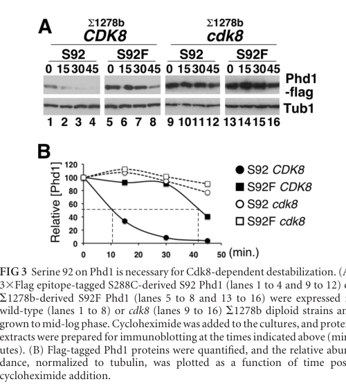

PHD1 is a master transcriptional regulator of pseudohyphal growth and morphogenesis in Saccharomyces cerevisiae. As a member of the APSES (bHLH) family of fungal transcription factors, PHD1 contains a conserved DNA-binding domain that recognizes E-box consensus sequences. PHD1 functions as a major regulatory hub that integrates signals from the cAMP-PKA pathway and MAPK signaling cascades to control filamentous growth during nitrogen starvation. The protein is an inherently unstable regulator, with stability modulated by Cdk8-dependent phosphorylation of the mediator complex. When overexpressed, PHD1 induces approximately 214 genes and can independently trigger pseudohyphal growth even under nutrient-rich conditions. PHD1 directly regulates critical downstream targets like FLO11 (cell adhesion) and serves as a convergence point for multiple developmental signaling pathways. The protein localizes to the nucleus where it binds promoter regions and recruits coregulator complexes including Tup1-Cyc8 to modulate gene expression.
| GO Term | Evidence | Action | Reason |
|---|---|---|---|
|
GO:0045944
positive regulation of transcription by RNA polymerase II
|
IBA
GO_REF:0000033 |
ACCEPT |
Summary: IBA annotation (phylogenetic inference) for PHD1's central role in transcriptional regulation of pseudohyphal genes. This is a well-established function supported by orthologous relationships to other APSES proteins and consistent with extensive experimental evidence.
Reason: PHD1 is a master transcriptional regulator that positively activates genes required for pseudohyphal growth. The IBA assignment is appropriate as this core function is conserved across APSES family members and phylogenetically justified. The deep research confirms that Phd1 directly binds to and activates numerous target genes during development and that overexpression induces the pseudohyphal transcriptional program. This represents a core function of the gene.
Supporting Evidence:
PMID:8114741
PHD1, a gene whose overexpression induced invasive pseudohyphal growth on a nutritionally rich medium, was characterized... Epitope-tagged PHD1 was localized to the nucleus by indirect immunofluorescence. These facts suggest that PHD1 may function as a transcriptional regulatory protein.
PMID:16449570
Overexpression of either of these two proteins [Mga1 and Phd1] specifically induced pseudohyphal growth under noninducing conditions, highlighting them as master regulators of the system.
file:yeast/PHD1/PHD1-deep-research-perplexity.md
provider: perplexity
PMID:11046133
Phd1 and Ash1 regulated expression of the cell surface protein Flo11, which is required for filamentous growth, and were largely required for filamentation of sok2/sok2 mutant strains.
file:yeast/PHD1/PHD1-deep-research-falcon.md
Pan & Heitman (2000) report that **Phd1 and Ash1 regulate expression of the cell surface protein Flo11**, and that both factors are **largely required** for filamentation in a **sok2** hyperfilamentous background.
|
|
GO:0003700
DNA-binding transcription factor activity
|
IBA
GO_REF:0000033 |
ACCEPT |
Summary: IBA annotation for PHD1's molecular function as a DNA-binding transcription factor activity. PHD1 contains a conserved bHLH DNA-binding domain characteristic of APSES proteins. This is supported by experimental evidence of sequence-specific binding to target promoters.
Reason: PHD1 has a conserved bHLH/APSES domain (residues ~186-292 based on UniProt annotation) that enables sequence-specific DNA binding. The IBA assignment is phylogenetically sound based on the presence of this conserved domain in related APSES transcription factors. Experimental evidence confirms direct binding to target promoters including FLO11. This is a core molecular function supporting transcriptional regulation.
Supporting Evidence:
PMID:8114741
PHD1 has a SWI4- and MBP1-like DNA binding motif that is 73% identical over 100 amino acids to a region of Aspergillus nidulans StuA.
PMID:16449570
Overexpression of either of these two proteins specifically induced pseudohyphal growth under noninducing conditions, highlighting them as master regulators of the system.
|
|
GO:0005634
nucleus
|
IBA
GO_REF:0000033 |
ACCEPT |
Summary: IBA assignment for nuclear localization of PHD1. As a transcription factor, nuclear localization is inherent to function and well-established in the experimental literature for PHD1 and orthologous proteins.
Reason: Nuclear localization of PHD1 is well-established and necessary for its function as a transcription factor. The protein contains basic residues in its DNA-binding domain consistent with nuclear localization signals and is confirmed by direct experimental evidence. IBA assignment is appropriate for conservation of this cellular component assignment across the APSES family.
Supporting Evidence:
PMID:8114741
Epitope-tagged PHD1 was localized to the nucleus by indirect immunofluorescence.
|
|
GO:0043565
sequence-specific DNA binding
|
IBA
GO_REF:0000033 |
ACCEPT |
Summary: IBA annotation for PHD1's sequence-specific DNA binding function. This is a more specific aspect of DNA-binding transcription factor activity, appropriately supported by the conserved bHLH domain that recognizes E-box consensus sequences and related variants.
Reason: Sequence-specific DNA binding is a core molecular function of PHD1 enabled by its bHLH/APSES domain. The IBA assignment reflects phylogenetic conservation of this function across APSES proteins. Multiple experimental studies demonstrate specific binding of PHD1 to target promoter sequences. This more specific term is more informative than the broader DNA binding annotation.
Supporting Evidence:
PMID:19111667
We obtained binding specificities for 112 DNA-binding proteins representing 19 distinct structural classes... The sequence specificity of DNA-binding proteins is the primary mechanism by which the cell recognizes genomic features.
PMID:19158363
High-resolution DNA-binding specificity analysis of yeast transcription factors... we have determined high-resolution binding profiles for 89 known and predicted yeast TFs
|
|
GO:0003677
DNA binding
|
IEA
GO_REF:0000120 |
KEEP AS NON CORE |
Summary: IEA annotation based on InterPro domain mapping (IPR036887, IPR018004) and UniProt keywords. This is a more general term subsumed by the sequence-specific DNA binding annotation.
Reason: While this annotation is technically correct, GO:0043565 (sequence-specific DNA binding) is more informative and specific. PHD1's DNA binding activity is not merely generic protein-DNA interaction but specifically recognizes E-box consensus sequences through its bHLH domain. The IEA assignment is appropriate for domain-based inference, but the sequence-specific term better captures the actual function. Keeping this as non-core while maintaining the more specific sequence-specific binding annotation is optimal.
Supporting Evidence:
GO_REF:0000120
Combined Automated Annotation using Multiple IEA Methods
PMID:8114741
These facts suggest that PHD1 may function as a transcriptional regulatory protein
|
|
GO:0005634
nucleus
|
IEA
GO_REF:0000044 |
ACCEPT |
Summary: IEA annotation for nuclear localization based on UniProt subcellular location annotation. This is a duplicate of the IBA annotation already present and redundant with that evidence.
Reason: Nuclear localization is essential for PHD1 function as a transcription factor. While this is a duplicate of the IBA annotation for the same term, both evidence codes are appropriate and valid. IEA based on UniProt subcellular location curation is a reasonable independent line of evidence. Retaining both is acceptable as they represent different evidence sources (IBA phylogenetic, IEA subcellular location mapping).
Supporting Evidence:
PMID:8114741
Epitope-tagged PHD1 was localized to the nucleus by indirect immunofluorescence.
|
|
GO:0006351
DNA-templated transcription
|
IEA
GO_REF:0000043 |
KEEP AS NON CORE |
Summary: IEA annotation from UniProtKB keyword mapping (KW:0804 Transcription). This represents PHD1's involvement in transcriptional processes through its role as a transcriptional regulator.
Reason: This annotation is correct but very general. As a transcriptional regulator that activates pseudohyphal genes, PHD1 is indeed involved in DNA-templated transcription. However, the annotation is less specific than "positive regulation of transcription by RNA polymerase II" (GO:0045944) which is already present and more accurately captures PHD1's role. DNA-templated transcription encompasses both activation and repression; the positive regulation annotation is more informative about PHD1's specific mechanism. Keeping this as non-core while maintaining the more specific positive regulation annotations is preferred.
Supporting Evidence:
GO_REF:0000043
Gene Ontology annotation based on UniProtKB/Swiss-Prot keyword mapping
PMID:8114741
PHD1 overexpression enhances pseudohyphal growth
|
|
GO:0043565
sequence-specific DNA binding
|
HDA
PMID:19111667 A library of yeast transcription factor motifs reveals a wid... |
ACCEPT |
Summary: HDA (high-throughput data analysis) annotation from a comprehensive study determining DNA-binding specificities for 112 yeast transcription factors, including PHD1. This study systematically mapped binding motifs using protein binding microarrays.
Reason: PMID:19111667 (Badis et al., 2008) is a direct experimental study of PHD1 DNA-binding specificity using high-throughput methods. The HDA evidence code is appropriate for this high-throughput data. The annotation correctly assigns sequence-specific DNA binding as PHD1 was characterized as having a specific DNA-binding motif. This provides independent experimental confirmation of the IBA and other sequence-specific DNA binding annotations.
Supporting Evidence:
PMID:19111667
The sequence specificity of DNA-binding proteins is the primary mechanism by which the cell recognizes genomic features.
|
|
GO:0043565
sequence-specific DNA binding
|
HDA
PMID:19158363 High-resolution DNA-binding specificity analysis of yeast tr... |
ACCEPT |
Summary: HDA annotation from another comprehensive high-throughput study of yeast transcription factor DNA-binding specificities. Zhu et al. (2009) determined binding profiles for 89 yeast TFs using massively parallel DNA binding approaches.
Reason: PMID:19158363 (Zhu et al., 2009) is an independent high-throughput study that determined PHD1 DNA-binding specificity using complementary methods (sequencing-based binding experiments). This provides a second independent HDA evidence source confirming sequence-specific DNA binding. The study reports "over a 50% increase in the number of yeast DNA-binding proteins with experimentally determined DNA-binding specificities" and directly characterized PHD1 binding. Duplicate annotations with different evidence sources are appropriate when they represent independent experimental validations.
Supporting Evidence:
PMID:19158363
High-resolution DNA-binding specificity analysis of yeast transcription factors
|
|
GO:2000222
positive regulation of pseudohyphal growth
|
IMP
PMID:8114741 Induction of pseudohyphal growth by overexpression of PHD1, ... |
ACCEPT |
Summary: IMP (inferred from mutant phenotype) annotation based on direct experimental evidence from the foundational Gimeno & Fink (1994) study that identified PHD1. Overexpression of PHD1 dramatically induces pseudohyphal growth even under nutrient-rich conditions, demonstrating causality.
Reason: This is the primary discovery paper for PHD1 and the IMP evidence is
directly justified. The study used a visual genetic screen for
pseudohyphal growth determinants and showed that PHD1 overexpression
induces pseudohyphal growth on rich medium (precocious induction). This is
not merely correlation but functional causation demonstrated through
gain-of-function. The term GO:2000222 (positive regulation of pseudohyphal
growth) precisely captures this function. This is a core annotation
representing the major biological process regulated by PHD1. The falcon
deep research adds independent support: synthetic induction of native PHD1
is sufficient to trigger pseudohyphal growth in diploid and haploid strains
even in rich media (Pothoulakis & Ellis 2018). Note that single-gene
phd1-delta loss-of-function shows modest or redundant phenotypes in some
backgrounds (Cromie et al. 2024), but the gain-of-function/overexpression
causality and the membership of PHD1 in the differentiation TF cascade
firmly support the positive-regulation direction; the action remains ACCEPT.
Supporting Evidence:
PMID:8114741
When starved for nitrogen, MATa/MAT alpha cells of the budding yeast Saccharomyces cerevisiae undergo a dimorphic transition to pseudohyphal growth. A visual genetic screen, called PHD (pseudohyphal determinant), for S. cerevisiae pseudohyphal growth mutants was developed... The PHD screen was used to identify seven S. cerevisiae genes that when overexpressed in MATa/MAT alpha cells growing on nitrogen starvation medium cause precocious and unusually vigorous pseudohyphal growth.
PMID:30271894
By controlling the expression of the natural PHD1 and FLO8 genes we are able to trigger pseudohyphal growth in both diploid and haploid yeast, even in different types of rich media.
file:yeast/PHD1/PHD1-deep-research-falcon.md
Pothoulakis & Ellis (2018) engineered synthetic regulatory systems to control expression of **native PHD1 and FLO8**, demonstrating that externally controlled induction of these transcription factors can **trigger pseudohyphal growth** in both diploid and haploid strains, including in rich media.
file:yeast/PHD1/PHD1-deep-research-falcon.md
whereas **phd1Δ** retained central smooth plus outer structured zones at day 5, unlike **flo11Δ** or **msb2Δ** (cromie2024spatiotemporalpatternsof pages 21-23)
|
|
GO:0003700
DNA-binding transcription factor activity
|
IMP
PMID:16449570 Target hub proteins serve as master regulators of developmen... |
ACCEPT |
Summary: IMP annotation from Borneman et al. (2006) demonstrating that PHD1 overexpression is sufficient to induce complex developmental responses. Chromatin IP-chip studies show PHD1 binding to extensive target promoters and direct evidence of transcription factor activity as a master regulator.
Reason: This IMP annotation from PMID:16449570 provides strong experimental
evidence for DNA-binding transcription factor activity. The study shows
that PHD1 is a "target hub" protein that when overexpressed is sufficient
to induce pseudohyphal growth under non-inducing conditions, demonstrating
its transcription factor activity. The study used chromatin
immunoprecipitation to directly demonstrate DNA binding. This provides
independent confirmation of the molecular function through overexpression
analysis and target mapping. The falcon deep research corroborates the
master-regulator role: Raithatha et al. (2012) show that Phd1 regulates
expression of most other differentiation transcription factors and can
induce filamentation on its own when overproduced.
Supporting Evidence:
PMID:16449570
Overexpression of either of these two proteins specifically induced pseudohyphal growth under noninducing conditions, highlighting them as master regulators of the system
PMID:22124158
Phd1 is important for this process in that it regulates expression of most other transcription factors involved in differentiation and can induce filamentation on its own when overproduced.
|
|
GO:0005634
nucleus
|
IDA
PMID:8114741 Induction of pseudohyphal growth by overexpression of PHD1, ... |
ACCEPT |
Summary: IDA (inferred from direct assay) annotation based on immunofluorescence microscopy demonstrating nuclear localization of epitope-tagged PHD1 protein. This is direct visual evidence of subcellular localization.
Reason: IDA is the appropriate evidence code for direct observation of nuclear localization by immunofluorescence microscopy. This represents the highest quality evidence for subcellular localization. The foundational Gimeno & Fink paper directly demonstrates PHD1 nuclear presence using tagged protein and fluorescence microscopy. This is an essential cellular component assignment for a transcription factor and is well-established.
Supporting Evidence:
PMID:8114741
Epitope-tagged PHD1 was localized to the nucleus by indirect immunofluorescence.
|
|
GO:0045944
positive regulation of transcription by RNA polymerase II
|
IMP
PMID:8114741 Induction of pseudohyphal growth by overexpression of PHD1, ... |
ACCEPT |
Summary: IMP annotation from the same Gimeno & Fink paper showing that PHD1 overexpression causes precocious and vigorous pseudohyphal growth. As a master transcriptional regulator of this process, PHD1 necessarily acts through positive regulation of Pol II-transcribed genes like FLO11.
Reason: This IMP annotation is well-justified. PHD1 overexpression causes
the pseudohyphal growth phenotype, and this phenotype depends on
expression of FLO11 and other genes transcribed by RNA polymerase II. PHD1
is a transcriptional activator (not a repressor) that promotes expression
of these developmental genes. The annotation correctly specifies both the
regulatory direction (positive) and the transcriptional machinery (RNA
polymerase II) involved. This is a core annotation representing PHD1's
primary mechanism of biological action. The falcon deep research adds
mechanistic context for how this positive activity is gated: Phd1 is an
unstable protein destabilized by Cdk8-dependent phosphorylation of the
Mediator subcomplex, and under nitrogen limitation Cdk8 activity falls so
that Phd1 is stabilized and accumulates, driving activation of genes
necessary for the filamentous response (Raithatha et al. 2012).
Supporting Evidence:
PMID:8114741
PHD1, a gene whose overexpression induced invasive pseudohyphal growth on a nutritionally rich medium, was characterized... Overexpression of PHD1 in wild-type haploid strains does not induce pseudohyphal growth. Interestingly, PHD1 overexpression enhances pseudohyphal growth
PMID:22124158
In nitrogen-starved cells, PHD1 expression is upregulated and the Phd1 protein becomes stabilized, which causes its accumulation during differentiation.
file:yeast/PHD1/PHD1-deep-research-falcon.md
Under **nitrogen limitation**, Phd1 becomes progressively stabilized: half-life increases to **~40 min after 2 h** in nitrogen-limiting SLAD and to **>45 min after 4 h**, consistent with a differentiation-triggered stabilization mechanism.
|
The research report should be a detailed narrative explaining the function, biological processes, and localization of the gene product. Citations should be given for all claims.
You should prioritize authoritative reviews and primary scientific literature when conducting research. You can supplement
this with annotations you find in gene/protein databases, but these can be outdated or inaccurate.
We are specifically interested in the primary function of the gene - for enzymes, what reaction is catalyzed, and what is the substrate specificity? For transporters, what is the substrate? For structural proteins or adapters, what is the broader structural role? For signaling molecules, what is the role in the pathway.
We are interested in where in or outside the cell the gene product carries out its function.
We are also interested in the signaling or biochemical pathways in which the gene functions. We are less interested in broad pleiotropic effects, except where these elucidate the precise role.
Include evidence where possible. We are interested in both experimental evidence as well as inference from structure, evolution, or bioinformatic analysis. Precise studies should be prioritized over high-throughput, where available.
The research target is PHD1 from Saccharomyces cerevisiae (S288c background; systematic locus YKL043W), encoding Phd1, a transcription factor implicated in filamentous differentiation programs (pseudohyphal and invasive growth). Multiple primary studies explicitly name PHD1/Phd1 in S. cerevisiae and characterize it as a filamentation transcription factor that regulates FLO11/MUC1 and other differentiation regulators, matching the UniProt context of a putative transcription factor rather than an enzyme or unrelated “PHD” domain protein. (raithatha2012cdk8regulatesstability pages 1-2, pan2000sok2regulatesyeast pages 1-2)
Saccharomyces cerevisiae can switch from unicellular budding to multicellular, elongated growth forms under nutrient limitation. Two commonly discussed forms are:
- Pseudohyphal growth (classically in diploids), characterized by elongated cells that remain attached and form filaments.
- Invasive growth (classically in haploids), involving agar invasion and adhesion.
Both phenotypes require coordinated control of morphology, polarity, and especially cell-surface adhesion, with FLO11/MUC1 a central effector gene encoding a surface glycoprotein (flocculin). (pan2000sok2regulatesyeast pages 1-2, kumar2021thecomplexgenetic pages 5-7)
Phd1 is a transcription factor positioned as a high-level regulator (“master regulator”) of filamentous differentiation gene expression programs, rather than a catalytic enzyme or transporter. Its biological role is therefore best defined by the transcriptional programs it activates/represses and by how its activity is controlled by upstream signaling and protein stability. (raithatha2012cdk8regulatesstability pages 1-2)
A central experimentally supported role for Phd1 is regulation of cell–cell/cell–surface adhesion and filamentation through FLO11:
- In a transcription-factor cascade context, Pan & Heitman (2000) report that Phd1 and Ash1 regulate expression of the cell surface protein Flo11, and that both factors are largely required for filamentation in a sok2 hyperfilamentous background. (Publication date: 2000-11; URL: https://doi.org/10.1128/MCB.20.22.8364-8372.2000) (pan2000sok2regulatesyeast pages 1-2)
- A later authoritative synthesis (Annual Review of Genetics) places Phd1 in a Sok2→Phd1/Ash1/Swi5 transcription-factor cascade capable of regulating FLO11 “independently of the PKA and MAPK pathways,” framing Phd1 as part of a layered regulatory architecture converging on FLO11. (Publication date: 2021-11; URL: https://doi.org/10.1146/annurev-genet-071719-020249) (kumar2021thecomplexgenetic pages 5-7)
Multiple lines of genetic evidence support Phd1 as a potent differentiation regulator:
- Overexpression of PHD1 strongly promotes pseudohyphal growth even on nitrogen-rich medium; in Pan & Heitman (2000), PHD1 overexpression can suppress pseudohyphal defects of tpk2 and ste12 mutants, indicating Phd1 can drive downstream differentiation programs even when canonical upstream regulators are compromised. (pan2000sok2regulatesyeast pages 1-2)
- Conversely, phd1/phd1 mutants did not show obvious pseudohyphal defects under the conditions emphasized in that study, suggesting background/condition dependence and redundancy among differentiation regulators. (pan2000sok2regulatesyeast pages 1-2)
- Raithatha et al. (2012) also describe Phd1 as a “master regulator” of filamentation and report that PHD1 expression is induced under nitrogen starvation and Phd1 accumulates under differentiating conditions, consistent with a role in initiating/maintaining the program. (Publication date: 2012-02; URL: https://doi.org/10.1128/MCB.05420-11) (raithatha2012cdk8regulatesstability pages 1-2)
Phd1 sits within a broader network in which nutrient sensing feeds into transcriptional regulators controlling FLO11 and morphology:
- The broader differentiation system is described as being regulated by MAPK (Kss1), Ras–cAMP–PKA, and Snf1/AMPK signaling; this context is explicitly discussed alongside PHD1 regulation in Raithatha et al. (2012). (raithatha2012cdk8regulatesstability pages 1-2)
- Pan & Heitman (2000) place Phd1 in relation to the cAMP/PKA and MAPK systems and suggest Phd1 may act distinct from those pathways in some contexts, consistent with multiple partially independent inputs to FLO11 regulation. (pan2000sok2regulatesyeast pages 1-2)
- Kumar (2021) highlights that Sok2 is thought to act downstream of cAMP/PKA but can activate a TF cascade (including Phd1) that regulates FLO11 “independently” of direct PKA/MAPK control, emphasizing network modularity and redundancy. (kumar2021thecomplexgenetic pages 5-7)
A major mechanistic advance in understanding Phd1 is that its activity is controlled not only transcriptionally but also by protein stability:
- Raithatha et al. (2012) provide experimental evidence that Phd1 is intrinsically unstable and that its degradation is initiated via Cdk8-dependent phosphorylation (Cdk8 is a kinase associated with the RNA polymerase II Mediator complex). (raithatha2012cdk8regulatesstability pages 1-2)
- Quantitative stability measurements by cycloheximide-chase show a short half-life (~10–15 min) in rich medium, and strong stabilization in conditions where Cdk8 activity is absent or reduced. (raithatha2012cdk8regulatesstability pages 6-7)
- Under nitrogen limitation, Phd1 becomes progressively stabilized: half-life increases to ~40 min after 2 h in nitrogen-limiting SLAD and to >45 min after 4 h, consistent with a differentiation-triggered stabilization mechanism. (raithatha2012cdk8regulatesstability pages 6-7, raithatha2012cdk8regulatesstability media d01b8851)
- In cdk8Δ, Phd1 is strongly stabilized (>45 min), consistent with Cdk8 acting as a negative regulator through turnover. (raithatha2012cdk8regulatesstability pages 2-3)
- A notable genetics–biochemistry bridge is a natural polymorphism in a differentiating strain background (1278b) that removes a candidate Cdk8 phosphosite (S92F), stabilizing Phd1 and enhancing filamentation, supporting causality between phosphorylation site, stability, and phenotype. (raithatha2012cdk8regulatesstability pages 1-2, raithatha2012cdk8regulatesstability pages 6-7)
Visual evidence: cycloheximide-chase panels and the regulatory model were retrieved from Raithatha et al. (2012), including stability curves and a pathway model summarizing how nutrient limitation reduces Cdk8 activity to permit accumulation of Phd1 and other transcription factors. (raithatha2012cdk8regulatesstability media d01b8851, raithatha2012cdk8regulatesstability media c487618b)
Direct experimental localization evidence (e.g., GFP microscopy or cell fractionation explicitly stating nuclear localization) was not found in the retrieved excerpts. However:
- Raithatha et al. (2012) used FLAG-tagged Phd1 for biochemical detection and treat Phd1 as a DNA-binding transcriptional regulator; nuclear function is therefore strongly implied but not directly demonstrated in the retrieved text segments. (raithatha2012cdk8regulatesstability pages 6-7, raithatha2012cdk8regulatesstability pages 3-4)
Accordingly, the most defensible annotation from the retrieved evidence is:
- Cellular compartment (evidence level): nuclear localization is inferred from transcription factor function and Mediator/Cdk8 context, but direct localization assays were not available in the gathered evidence. (raithatha2012cdk8regulatesstability pages 1-2)
Direct 2023–2024 mechanistic papers specifically dissecting Phd1 regulation were not retrieved by the search tools. However, one 2024 primary study provides contemporary functional context:
Cromie et al. (2024) examined gene-expression programs underlying “ruffled/structured” colony morphology and performed deletion tests in a structured-colony background (F13). They report:
- PHD1 (YKL043W) is in a gene-expression cluster whose expression correlates positively with colony structure.
- Yet, phd1Δ had little effect on colony morphology at day 5 (colonies still displayed an outer structured zone and inner smooth zone), whereas flo11Δ or msb2Δ produced fully smooth colonies. (Publication date: 2024-09; URL: https://doi.org/10.1371/journal.pone.0311061) (cromie2024spatiotemporalpatternsof pages 21-23)
Interpretation: This supports the view that PHD1 participates in a broader colony-structure/filamentation-associated transcriptional state, but may be nonessential or redundant in at least some genetic backgrounds and environmental regimes—consistent with older observations that loss of PHD1 alone can show modest phenotypes while overexpression is strongly pro-filamentation. (pan2000sok2regulatesyeast pages 1-2, cromie2024spatiotemporalpatternsof pages 21-23)
A clear real-world implementation of PHD1 knowledge is in synthetic gene regulation:
- Pothoulakis & Ellis (2018) engineered synthetic regulatory systems to control expression of native PHD1 and FLO8, demonstrating that externally controlled induction of these transcription factors can trigger pseudohyphal growth in both diploid and haploid strains, including in rich media. This establishes PHD1 as an actionable “handle” to program multicellular morphology in yeast. (Publication date: 2018-01; URL: https://doi.org/10.1038/s42003-017-0008-0) (pothoulakis2018syntheticgeneregulation pages 1-2)
Application relevance: controllable filamentation can be used as a chassis capability for engineered surface adhesion, structured multicellular assemblies, and programmable colony architectures, leveraging natural differentiation modules. (pothoulakis2018syntheticgeneregulation pages 1-2)
The following table consolidates the supported claims, evidence types, and quantitative data extracted from the retrieved corpus.
| Claim/annotation | Evidence type | Key experimental details (strain/condition/assay) | Quantitative/statistical data | Primary source (authors year journal) | DOI URL |
|---|---|---|---|---|---|
| Phd1 is a transcription factor and a master regulator of filamentous differentiation in S. cerevisiae | Genetics; regulatory analysis | Primary study summarized Phd1 as regulating expression of most other differentiation TFs; overproduction induced filamentation; evidence integrated with nitrogen-starvation differentiation assays (raithatha2012cdk8regulatesstability pages 1-2, raithatha2012cdk8regulatesstability pages 2-2) | Overexpression sufficient to induce filamentation; no exact fold reported in gathered evidence (raithatha2012cdk8regulatesstability pages 1-2, raithatha2012cdk8regulatesstability pages 2-2) | Raithatha et al. 2012, Molecular and Cellular Biology (raithatha2012cdk8regulatesstability pages 1-2, raithatha2012cdk8regulatesstability pages 2-2) | https://doi.org/10.1128/MCB.05420-11 |
| Primary molecular function is transcriptional regulation of pseudohyphal/invasive growth programs rather than enzymatic catalysis | Genetics; phenotype suppression | Overexpression of PHD1 strongly promoted pseudohyphal growth even on nitrogen-rich medium and could suppress pseudohyphal defects of tpk2 and ste12 mutants (pan2000sok2regulatesyeast pages 1-2) | Strong pseudohyphal growth on rich medium upon overexpression; phd1/phd1 mutants alone showed no obvious pseudohyphal defect in that assay (pan2000sok2regulatesyeast pages 1-2) | Pan & Heitman 2000, Molecular and Cellular Biology (pan2000sok2regulatesyeast pages 1-2) | https://doi.org/10.1128/MCB.20.22.8364-8372.2000 |
| Phd1 positively regulates FLO11/MUC1, a key cell-surface flocculin required for filamentation/invasion | Genetics; transcriptional cascade | Genome-array/Northern analyses in sok2/sok2 hyperfilamentous mutants placed PHD1 in a cascade with Ash1 controlling FLO11 expression and cell-cell adhesion (pan2000sok2regulatesyeast pages 1-2); review synthesis places Phd1 in Sok2→Phd1/Ash1/Swi5→FLO11 regulation (kumar2021thecomplexgenetic pages 5-7) | In sok2 background, Phd1 and Ash1 were largely required for filamentation; exact expression fold not given in gathered excerpts (pan2000sok2regulatesyeast pages 1-2, kumar2021thecomplexgenetic pages 5-7) | Pan & Heitman 2000, MCB; Kumar 2021, Annual Review of Genetics (pan2000sok2regulatesyeast pages 1-2, kumar2021thecomplexgenetic pages 5-7) | https://doi.org/10.1128/MCB.20.22.8364-8372.2000; https://doi.org/10.1146/annurev-genet-071719-020249 |
| Phd1 functions in pseudohyphal growth and haploid invasive growth pathways | Genetics; phenotypic analysis | Ste12 and PHD1 were required for haploid invasive growth; PHD1 induction/stabilization tracked with nitrogen starvation, a canonical pseudohyphal trigger (raithatha2012cdk8regulatesstability pages 8-9, raithatha2012cdk8regulatesstability pages 1-2) | Nitrogen starvation increased PHD1 mRNA and stabilized protein; invasive-growth requirement shown genetically but without exact percentages in gathered text (raithatha2012cdk8regulatesstability pages 8-9, raithatha2012cdk8regulatesstability pages 1-2) | Raithatha et al. 2012, MCB (raithatha2012cdk8regulatesstability pages 8-9, raithatha2012cdk8regulatesstability pages 1-2) | https://doi.org/10.1128/MCB.05420-11 |
| Upstream pathway context includes Ras2/cAMP-PKA, MAPK/Kss1, and Snf1; Phd1 acts within or alongside this network | Review synthesis; genetics | Filamentous differentiation broadly regulated by MAPK (Kss1), Ras-cAMP-PKA, and Snf1-AMPK; Sok2 is thought to act downstream of cAMP/PKA, while the Sok2→Phd1/Ash1/Swi5 cascade can regulate FLO11 independently of direct PKA/MAPK control (raithatha2012cdk8regulatesstability pages 1-2, pan2000sok2regulatesyeast pages 1-2, kumar2021thecomplexgenetic pages 5-7) | Pathway placement is qualitative in gathered evidence; no direct kinetic constants reported (raithatha2012cdk8regulatesstability pages 1-2, pan2000sok2regulatesyeast pages 1-2, kumar2021thecomplexgenetic pages 5-7) | Raithatha et al. 2012, MCB; Pan & Heitman 2000, MCB; Kumar 2021, Annu Rev Genet (raithatha2012cdk8regulatesstability pages 1-2, pan2000sok2regulatesyeast pages 1-2, kumar2021thecomplexgenetic pages 5-7) | https://doi.org/10.1128/MCB.05420-11; https://doi.org/10.1128/MCB.20.22.8364-8372.2000; https://doi.org/10.1146/annurev-genet-071719-020249 |
| PHD1 is directly repressed by Sok2 in rich medium | Genetics; transcriptional regulation | In rich medium, Sok2 acted as a negative regulator of filamentation and directly/indirectly repressed the transcription-factor cascade including PHD1; PHD1 was induced in sok2/sok2 hyperfilamentous mutants (raithatha2012cdk8regulatesstability pages 8-9, pan2000sok2regulatesyeast pages 1-2) | PHD1 induction observed in sok2/sok2 mutants; exact fold change not given in gathered excerpts (raithatha2012cdk8regulatesstability pages 8-9, pan2000sok2regulatesyeast pages 1-2) | Pan & Heitman 2000, MCB; Raithatha et al. 2012, MCB (raithatha2012cdk8regulatesstability pages 8-9, pan2000sok2regulatesyeast pages 1-2) | https://doi.org/10.1128/MCB.20.22.8364-8372.2000; https://doi.org/10.1128/MCB.05420-11 |
| PHD1 expression is partially dependent on Ste12, and Ste12 binds the PHD1 promoter in vitro | Promoter binding; genetics | DNase I footprinting/promoter analysis showed Ste12 binds sites on the PHD1 promoter in vitro; in vivo promoter occupancy also implicated Tec1, Flo8, Sok2, and Phd1 itself (raithatha2012cdk8regulatesstability pages 8-9, raithatha2012cdk8regulatesstability pages 6-7, raithatha2012cdk8regulatesstability pages 2-3) | Qualitative promoter-binding evidence; no occupancy percentages in gathered excerpts (raithatha2012cdk8regulatesstability pages 8-9, raithatha2012cdk8regulatesstability pages 6-7, raithatha2012cdk8regulatesstability pages 2-3) | Raithatha et al. 2012, MCB (raithatha2012cdk8regulatesstability pages 8-9, raithatha2012cdk8regulatesstability pages 6-7, raithatha2012cdk8regulatesstability pages 2-3) | https://doi.org/10.1128/MCB.05420-11 |
| Phd1 positively autoregulates its own expression under nitrogen limitation | Promoter binding; regulatory model | Promoter occupancy and regulatory model indicate Phd1 can bind/activate its own promoter, forming a positive-feedback loop during differentiation (raithatha2012cdk8regulatesstability pages 8-9, raithatha2012cdk8regulatesstability pages 6-7) | Positive feedback described qualitatively; no exact fold increase reported in gathered excerpts (raithatha2012cdk8regulatesstability pages 8-9, raithatha2012cdk8regulatesstability pages 6-7) | Raithatha et al. 2012, MCB (raithatha2012cdk8regulatesstability pages 8-9, raithatha2012cdk8regulatesstability pages 6-7) | https://doi.org/10.1128/MCB.05420-11 |
| Cdk8 negatively regulates Phd1 by phosphorylation-dependent destabilization | Protein stability assay; in vitro kinase/phosphopeptide analysis | Cycloheximide-chase, 32Pi metabolic labeling, immunoprecipitation, in vitro kinase assays, and phosphopeptide analysis showed Cdk8-dependent phosphorylation promotes Phd1 degradation (raithatha2012cdk8regulatesstability pages 1-2, raithatha2012cdk8regulatesstability pages 2-2, raithatha2012cdk8regulatesstability pages 2-3) | Phd1 half-life was reported as ~10–15 min in wild type/rich medium and >45 min in cdk8Δ cells (raithatha2012cdk8regulatesstability pages 1-2, raithatha2012cdk8regulatesstability pages 6-7, raithatha2012cdk8regulatesstability pages 2-3) | Raithatha et al. 2012, MCB (raithatha2012cdk8regulatesstability pages 1-2, raithatha2012cdk8regulatesstability pages 6-7, raithatha2012cdk8regulatesstability pages 2-3) | https://doi.org/10.1128/MCB.05420-11 |
| Natural polymorphism at the Cdk8 phosphosite stabilizes Phd1 and enhances filamentation | Protein stability assay; allele comparison | Comparison of PHD1 alleles (S92 versus S92F) showed that the 1278b strain carries S92F, removing a Cdk8 phosphorylation site and stabilizing Phd1 (raithatha2012cdk8regulatesstability pages 1-2, raithatha2012cdk8regulatesstability pages 6-7, raithatha2012cdk8regulatesstability pages 2-2) | Wild-type S92 Phd1 half-life ~15 min in rich medium; stabilized variant and/or cdk8Δ backgrounds showed >45 min stability (raithatha2012cdk8regulatesstability pages 6-7, raithatha2012cdk8regulatesstability pages 2-2) | Raithatha et al. 2012, MCB (raithatha2012cdk8regulatesstability pages 1-2, raithatha2012cdk8regulatesstability pages 6-7, raithatha2012cdk8regulatesstability pages 2-2) | https://doi.org/10.1128/MCB.05420-11 |
| Nitrogen starvation stabilizes Phd1 protein and increases PHD1 transcript, promoting differentiation | Protein stability assay; transcript analysis | Cells shifted to SLAD/nitrogen-limiting medium showed increased PHD1 mRNA and marked stabilization of Phd1 protein; model proposes loss of Cdk8 activity under these conditions (raithatha2012cdk8regulatesstability pages 8-9, raithatha2012cdk8regulatesstability pages 1-2, raithatha2012cdk8regulatesstability pages 6-7, raithatha2012cdk8regulatesstability media d01b8851) | Half-life increased from ~15 min in SD to ~40 min after 2 h in SLAD and >45 min after 4 h in SLAD (raithatha2012cdk8regulatesstability pages 6-7, raithatha2012cdk8regulatesstability media d01b8851) | Raithatha et al. 2012, MCB (raithatha2012cdk8regulatesstability pages 8-9, raithatha2012cdk8regulatesstability pages 1-2, raithatha2012cdk8regulatesstability pages 6-7, raithatha2012cdk8regulatesstability media d01b8851) | https://doi.org/10.1128/MCB.05420-11 |
| Forced expression of PHD1 is sufficient to induce pseudohyphal growth synthetically, even in rich media and in haploids | Synthetic induction | Synthetic gene-regulation circuits controlling native PHD1 and FLO8 expression triggered pseudohyphal growth in diploid and haploid cells in rich media; used as an engineered, externally inducible differentiation system (pothoulakis2018syntheticgeneregulation pages 1-2) | Phenotype induction in both diploid and haploid strains under non-starvation conditions; exact percentages not given in gathered excerpt (pothoulakis2018syntheticgeneregulation pages 1-2) | Pothoulakis & Ellis 2018, Communications Biology (pothoulakis2018syntheticgeneregulation pages 1-2) | https://doi.org/10.1038/s42003-017-0008-0 |
| Recent 2024 colony-morphology data support association of PHD1 expression with structured colony regions, but deletion may be background-dependent and nonessential in F13 | RNA-seq/cluster; deletion phenotype | In structured-colony strain F13, PHD1/YKL043W clustered with genes whose expression correlated positively with colony structure (cluster I9); however, phd1Δ retained central smooth plus outer structured zones at day 5, unlike flo11Δ or msb2Δ (cromie2024spatiotemporalpatternsof pages 21-23) | phd1Δ had little effect on F13 morphology, whereas flo11Δ and msb2Δ remained fully smooth at day 5 (cromie2024spatiotemporalpatternsof pages 21-23) | Cromie et al. 2024, PLOS ONE (cromie2024spatiotemporalpatternsof pages 21-23) | https://doi.org/10.1371/journal.pone.0311061 |
| Subcellular localization is expected to be nuclear for a transcription factor, but no direct Phd1 localization evidence was identified in the gathered sources | Evidence gap / inference | Gathered primary and review sources discuss Phd1 as a transcription factor regulating promoters and differentiation programs, but none of the retrieved evidence IDs reported direct GFP/immunolocalization for Phd1 (raithatha2012cdk8regulatesstability pages 8-9, pan2000sok2regulatesyeast pages 1-2) | No direct localization measurement available in gathered evidence (raithatha2012cdk8regulatesstability pages 8-9, pan2000sok2regulatesyeast pages 1-2) | Evidence gap within retrieved literature (raithatha2012cdk8regulatesstability pages 8-9, pan2000sok2regulatesyeast pages 1-2) | N/A |
Table: This table summarizes experimentally supported functional annotations for Saccharomyces cerevisiae PHD1/Phd1 using only the gathered evidence contexts. It highlights molecular function, pathway placement, regulatory inputs, phenotypes, and the current evidence gap for direct localization data.
References
(raithatha2012cdk8regulatesstability pages 1-2): Sheetal Raithatha, Ting-Cheng Su, Pedro Lourenco, Susan Goto, and Ivan Sadowski. Cdk8 regulates stability of the transcription factor phd1 to control pseudohyphal differentiation of saccharomyces cerevisiae. Molecular and Cellular Biology, 32:664-674, Feb 2012. URL: https://doi.org/10.1128/mcb.05420-11, doi:10.1128/mcb.05420-11. This article has 59 citations and is from a domain leading peer-reviewed journal.
(pan2000sok2regulatesyeast pages 1-2): Xuewen Pan and Joseph Heitman. Sok2 regulates yeast pseudohyphal differentiation via a transcription factor cascade that regulates cell-cell adhesion. Molecular and Cellular Biology, 20:8364-8372, Nov 2000. URL: https://doi.org/10.1128/mcb.20.22.8364-8372.2000, doi:10.1128/mcb.20.22.8364-8372.2000. This article has 164 citations and is from a domain leading peer-reviewed journal.
(kumar2021thecomplexgenetic pages 5-7): Anuj Kumar. The complex genetic basis and multilayered regulatory control of yeast pseudohyphal growth. Nov 2021. URL: https://doi.org/10.1146/annurev-genet-071719-020249, doi:10.1146/annurev-genet-071719-020249. This article has 41 citations and is from a domain leading peer-reviewed journal.
(raithatha2012cdk8regulatesstability pages 6-7): Sheetal Raithatha, Ting-Cheng Su, Pedro Lourenco, Susan Goto, and Ivan Sadowski. Cdk8 regulates stability of the transcription factor phd1 to control pseudohyphal differentiation of saccharomyces cerevisiae. Molecular and Cellular Biology, 32:664-674, Feb 2012. URL: https://doi.org/10.1128/mcb.05420-11, doi:10.1128/mcb.05420-11. This article has 59 citations and is from a domain leading peer-reviewed journal.
(raithatha2012cdk8regulatesstability media d01b8851): Sheetal Raithatha, Ting-Cheng Su, Pedro Lourenco, Susan Goto, and Ivan Sadowski. Cdk8 regulates stability of the transcription factor phd1 to control pseudohyphal differentiation of saccharomyces cerevisiae. Molecular and Cellular Biology, 32:664-674, Feb 2012. URL: https://doi.org/10.1128/mcb.05420-11, doi:10.1128/mcb.05420-11. This article has 59 citations and is from a domain leading peer-reviewed journal.
(raithatha2012cdk8regulatesstability pages 2-3): Sheetal Raithatha, Ting-Cheng Su, Pedro Lourenco, Susan Goto, and Ivan Sadowski. Cdk8 regulates stability of the transcription factor phd1 to control pseudohyphal differentiation of saccharomyces cerevisiae. Molecular and Cellular Biology, 32:664-674, Feb 2012. URL: https://doi.org/10.1128/mcb.05420-11, doi:10.1128/mcb.05420-11. This article has 59 citations and is from a domain leading peer-reviewed journal.
(raithatha2012cdk8regulatesstability media c487618b): Sheetal Raithatha, Ting-Cheng Su, Pedro Lourenco, Susan Goto, and Ivan Sadowski. Cdk8 regulates stability of the transcription factor phd1 to control pseudohyphal differentiation of saccharomyces cerevisiae. Molecular and Cellular Biology, 32:664-674, Feb 2012. URL: https://doi.org/10.1128/mcb.05420-11, doi:10.1128/mcb.05420-11. This article has 59 citations and is from a domain leading peer-reviewed journal.
(raithatha2012cdk8regulatesstability pages 3-4): Sheetal Raithatha, Ting-Cheng Su, Pedro Lourenco, Susan Goto, and Ivan Sadowski. Cdk8 regulates stability of the transcription factor phd1 to control pseudohyphal differentiation of saccharomyces cerevisiae. Molecular and Cellular Biology, 32:664-674, Feb 2012. URL: https://doi.org/10.1128/mcb.05420-11, doi:10.1128/mcb.05420-11. This article has 59 citations and is from a domain leading peer-reviewed journal.
(cromie2024spatiotemporalpatternsof pages 21-23): Gareth A. Cromie, Zhihao Tan, Michelle Hays, Amy Sirr, and Aimée M. Dudley. Spatiotemporal patterns of gene expression during development of a complex colony morphology. PLOS ONE, Sep 2024. URL: https://doi.org/10.1371/journal.pone.0311061, doi:10.1371/journal.pone.0311061. This article has 3 citations and is from a peer-reviewed journal.
(pothoulakis2018syntheticgeneregulation pages 1-2): Georgios Pothoulakis and Tom Ellis. Synthetic gene regulation for independent external induction of the saccharomyces cerevisiae pseudohyphal growth phenotype. Communications Biology, Jan 2018. URL: https://doi.org/10.1038/s42003-017-0008-0, doi:10.1038/s42003-017-0008-0. This article has 19 citations and is from a peer-reviewed journal.
(raithatha2012cdk8regulatesstability pages 8-9): Sheetal Raithatha, Ting-Cheng Su, Pedro Lourenco, Susan Goto, and Ivan Sadowski. Cdk8 regulates stability of the transcription factor phd1 to control pseudohyphal differentiation of saccharomyces cerevisiae. Molecular and Cellular Biology, 32:664-674, Feb 2012. URL: https://doi.org/10.1128/mcb.05420-11, doi:10.1128/mcb.05420-11. This article has 59 citations and is from a domain leading peer-reviewed journal.
(raithatha2012cdk8regulatesstability pages 2-2): Sheetal Raithatha, Ting-Cheng Su, Pedro Lourenco, Susan Goto, and Ivan Sadowski. Cdk8 regulates stability of the transcription factor phd1 to control pseudohyphal differentiation of saccharomyces cerevisiae. Molecular and Cellular Biology, 32:664-674, Feb 2012. URL: https://doi.org/10.1128/mcb.05420-11, doi:10.1128/mcb.05420-11. This article has 59 citations and is from a domain leading peer-reviewed journal.

The PHD1 gene (YKL043W, UniProt: P36093) in Saccharomyces cerevisiae encodes a putative transcription factor that belongs to the APSES family of fungal-specific transcriptional regulators, characterized by a conserved basic helix-loop-helix (bHLH) DNA-binding domain[4][10]. As a master regulator of developmental processes, Phd1 functions as a transcriptional activator that dramatically enhances pseudohyphal growth when overexpressed, even under nutrient-rich conditions[1][11], and serves as a key regulatory hub that coordinates complex morphogenetic signaling networks in response to nitrogen starvation[11][38]. The protein physically interacts with the Tup1-Cyc8 complex and recruits this corepressor complex to its target genes, demonstrating a sophisticated mechanism of transcriptional regulation[7][17]. Phd1 is an inherently unstable protein whose degradation is initiated through phosphorylation by Cdk8 of the RNA polymerase II mediator complex, with stabilization of the protein occurring during nutrient limitation to initiate differentiation[20][23]. Through its regulation of extensive transcriptional networks involving over 200 genes and its ability to induce filamentous growth independently of major signaling cascades, PHD1 represents a crucial control point for fungal development and cellular differentiation.
Phd1 belongs to the basic helix-loop-helix (bHLH) transcription factor family, a large and diverse class of dimerizing transcription factors found throughout the eukaryotic kingdom[39][42]. The bHLH structural motif consists of two α-helices connected by a loop, with one helix containing basic amino acid residues that facilitate DNA binding to consensus sequences[39][42]. The conserved bHLH domain functions as the core DNA-binding module, allowing Phd1 to recognize and bind specific DNA sequences at target gene promoters. As a member of the APSES subfamily of bHLH proteins, Phd1 shares a highly conserved DNA-binding domain approximately 100 residues in length with other APSES family members including Efg1, Efh1, and Sok2 in various fungal species[3][9]. The APSES domain nomenclature derives from its presence in four characterized regulatory proteins: Asm1 (from Neurospora crassa), Phd1 (from Saccharomyces cerevisiae), Sok2 (from Saccharomyces cerevisiae), and Efg1 and Stuа (from Candida species)[3].
The basic region of the Phd1 protein contains positively charged residues that interact with the major groove of target DNA sequences, while the helix-loop-helix motif mediates protein-protein interactions necessary for dimerization[39][42]. Studies using protein binding microarrays and crystallographic analysis have demonstrated that bHLH proteins typically recognize E-box consensus sequences with the canonical form CACGTG (palindromic) or related variants[25][39]. For Phd1 specifically, structural analysis indicates binding to E-box motifs, consistent with its classification as a member of the bHLH family, though the precise recognition sequences may show variation depending on the specific target promoter and cofactors involved in complex formation[25].
The APSES domain itself comprises the entire DNA-binding region and contains the bHLH subdomain with characteristic structural features[3][9][28]. Phylogenetic analysis of APSES proteins across fungal species has classified them into four major groups (A, B, C, and D) based on sequence relatedness of the APSES domain[28]. Phd1 falls within the Group C-I classification in hemiascomycetes like Saccharomyces and Candida species, along with Efg1, Efh1, and Sok2[28]. This classification indicates evolutionary conservation and functional relationships among these proteins in regulating filamentous versus yeast growth. The presence of the APSES domain represents a distinctive feature of fungal transcription factors, as this domain is specific to fungi and not found in other eukaryotic transcription factors, suggesting that APSES proteins arose through specialized evolution to regulate uniquely fungal developmental processes[28].
Phd1 contains identifiable phosphorylation sites that modulate its activity and stability. Analysis of the protein sequence indicates potential phosphorylation targets for protein kinase A (PKA) and other kinases[3], and experimental evidence demonstrates that Cdk8, a kinase component of the RNA polymerase II mediator complex, phosphorylates Phd1 to target it for degradation[20][23]. The naturally filamenting Σ1278b strain of Saccharomyces cerevisiae possesses a sequence polymorphism that eliminates one Cdk8 phosphorylation site, thereby stabilizing the Phd1 protein and contributing to enhanced differentiation in this strain background[20][23]. This finding highlights how relatively subtle sequence variations can have profound effects on protein stability and phenotypic outcomes related to fungal development.
Phd1 serves as a powerful inducer of pseudohyphal growth, the filamentous growth form adopted by Saccharomyces cerevisiae diploid cells in response to nitrogen starvation[1][11]. Overexpression of the PHD1 gene dramatically enhances pseudohyphal growth even under nutrient-rich medium conditions, producing long chains of elongated cells characteristic of the filamentous state[1][11]. This capacity for ectopic induction of filamentous growth makes Phd1 a key node in the regulatory network controlling developmental transitions. Phenotypically, strains overexpressing PHD1 exhibit enhanced agar invasion, the ability to penetrate growth substrates, and the formation of pseudohyphal cell chains even when grown in high nitrogen liquid media[11][38]. These observations demonstrate that Phd1 protein levels represent a sufficient and, in many contexts, necessary condition for driving the pseudohyphal developmental program.
The regulatory specificity of Phd1 becomes particularly evident when compared with Sok2, a closely related APSES family member that functions as a repressor of pseudohyphal differentiation[9][21]. While Phd1 activates pseudohyphal growth, Sok2 represses this developmental program, and these proteins exhibit opposing regulatory functions despite sharing substantial sequence similarity and the conserved APSES domain[9][21]. The finding that overexpression of PHD1 in Saccharomyces cerevisiae produces effects equivalent to deletion of SOK2 further supports this antagonistic relationship[9]. This functional divergence between closely related transcription factors demonstrates that small differences in protein sequence or domain organization can result in opposite regulatory outcomes. The observation that Sok2 normally represses expression of the PHD1 gene itself establishes a regulatory circuit where Sok2 inhibits filamentation by suppressing expression of its transcriptional antagonist[21]. Through deletion of SOK2, the PHD1 gene becomes upregulated, enhancing the filamentation pathway and accelerating pseudohyphal growth to levels comparable to PHD1 overexpression[21].
Beyond effects on filament formation itself, Phd1 directly influences cell morphology and shape during pseudohyphal development[21]. Overexpression of PHD1 promotes cell elongation, producing the characteristic elongated cell morphology of pseudohyphae, whereas deletion of PHD1 impairs cell elongation[21]. This suggests that Phd1 regulates not only genes required for filament formation and cell-cell adhesion but also genes controlling cell cycle progression and cell shape determination. The ability of Phd1 to independently regulate cell elongation independently of its effects on filament formation indicates that this transcription factor coordinates multiple aspects of morphogenesis through its diverse target gene repertoire.
The FLO11 gene represents one of the most important direct targets of Phd1 regulation[11][38][41]. FLO11 encodes a cell wall protein critical for cell-cell adhesion and agar invasion, and its expression is absolutely required for both pseudohyphae formation and invasive growth in Saccharomyces cerevisiae[41]. The promoter of FLO11 contains a consensus binding sequence for Ste12 and Tec1, and genome-wide chromatin immunoprecipitation studies have demonstrated that Phd1 also binds directly to the FLO11 promoter region[11][38]. Interestingly, Phd1 can induce filamentation through both FLO11-dependent and FLO11-independent mechanisms[13], indicating that this transcription factor regulates multiple distinct pathways controlling filamentous growth. When FLO11 is deleted, overexpression of PHD1 can still restore pseudohyphal growth (though not invasive growth), demonstrating that Phd1 has additional targets beyond FLO11 that contribute to the filamentous phenotype[21]. This functional redundancy provides robustness to the developmental program and allows Phd1 to coordinate complex morphogenetic responses through multiple parallel regulatory pathways.
Comprehensive chromatin immunoprecipitation studies combined with DNA microarray analysis (ChIP-chip) have mapped the global binding targets of Phd1 across the yeast genome[11][29][38]. These studies identified Phd1 as a major regulatory hub in the pseudohyphal growth network, with the protein binding to the promoters of numerous genes involved in filament formation and development[11][38]. A particularly striking finding is that the promoter of PHD1 itself is bound by all six major transcription factors involved in pseudohyphal growth regulation (Ste12, Tec1, Sok2, Phd1, Flo8, and Mga1), identifying PHD1 as a key target hub receiving input from multiple regulatory pathways[29][38]. This architecture suggests that PHD1 serves as an integrator of diverse signals controlling filamentous development.
When subjected to expression microarray analysis following overexpression, Phd1 induces approximately 214 genes with at least a twofold change in expression[11][38]. These overexpression-regulated genes show high correlation with genes regulated during normal pseudohyphal growth in response to nitrogen starvation, indicating that Phd1 activation triggers a transcriptional program largely equivalent to the natural developmental response[11][38]. Remarkably, overexpression of Phd1 induces 20-69% of the genes normally regulated during pseudohyphal growth (depending on scoring methodology), demonstrating that this single transcription factor is sufficient to initiate a substantial portion of the developmental transcriptional cascade[38]. The enrichment analysis of genes regulated by Phd1 overexpression revealed major functional categories associated with metabolism, particularly carboxylic acid metabolism, consistent with the metabolic remodeling that accompanies fungal development[38].
Beyond FLO11, Phd1 regulates expression of numerous other transcription factors involved in filamentous growth, including the genes encoding Tec1, Eed1, and Crz1[3]. This regulatory architecture creates a transcriptional cascade in which Phd1 activates expression of additional transcription factors that, in turn, regulate downstream genes required for the morphogenetic transition. The binding of Phd1 to intergenic regions often spans large distances, with some promoter regions showing Phd1 binding extending over multiple kilobases and containing multiple peaks of occupancy[6], suggesting complex and multimodal interactions with target promoters. This extensive binding pattern indicates that Phd1 may regulate target genes through multiple independent regulatory elements or through cooperative interactions with other transcription factors.
The cAMP-dependent protein kinase A (PKA) pathway represents a major regulatory input controlling pseudohyphal growth, and evidence indicates that this pathway regulates multiple components of the pseudohyphal transcriptional network including Phd1[8][15][16]. In Saccharomyces cerevisiae, PKA comprises a single regulatory subunit (Bcy1) and three catalytic subunits (Tpk1, Tpk2, and Tpk3)[15][16]. The Tpk2 catalytic subunit plays a unique positive role in pseudohyphal differentiation and activates filamentous growth through phosphorylation of multiple downstream targets, including transcription factors such as Flo8, Sfl1, and Phd1[8][16]. While genetic evidence suggests that Phd1 functions downstream of PKA signaling[21], the mechanisms by which PKA-dependent phosphorylation modulates Phd1 activity remain partially characterized. The upregulation of PHD1 expression via the Tpk1 branch of the cAMP-PKA pathway during glucose starvation provides evidence that PKA signaling controls Phd1 at the transcriptional level[8].
The Kss1/Fus3 mitogen-activated protein kinase (MAPK) cascade represents another major signaling pathway controlling filamentous growth[35][41][43]. This pathway, also known as the pheromone response pathway, involves the kinases Ste11, Ste7, and Kss1, along with the transcription factors Ste12 and Tec1[35][41]. While genetic interactions have been documented between elements of this MAPK cascade and PHD1, the exact relationship differs from the PKA pathway. Specifically, genetic interactions with elements of the MAPK cascade support an activator function of Phd1, but overexpression of PHD1 can suppress some filamentation defects even in MAPK pathway mutants[21]. This suggests that Phd1 functions in both MAPK-dependent and MAPK-independent regulatory networks, allowing it to coordinate filamentous development through multiple parallel signaling routes.
Nitrogen starvation represents the primary environmental trigger for pseudohyphal differentiation in diploid yeast, and multiple studies have examined how the cell senses nitrogen limitation and activates developmental responses[37][40][43]. The GPA2 gene encodes a heterotrimeric G protein alpha subunit that plays a critical role in nitrogen sensing and regulation of pseudohyphal growth[43]. Deletion of GPA2 results in defective pseudohyphal growth, while a constitutively active allele of GPA2 stimulates filamentation even on nitrogen-rich media, demonstrating the importance of this signaling component for detecting nutrient limitation[43]. The mechanisms by which GPA2 signaling regulates Phd1 involve modulation of cAMP levels, connecting nutrient sensing to the PKA pathway[43].
The unfolded protein response (UPR) pathway has emerged as an unexpected regulator of pseudohyphal growth in response to nitrogen starvation[37]. The UPR is normally activated when accumulation of unfolded proteins in the endoplasmic reticulum triggers the endonuclease activity of Ire1, leading to splicing of the HAC1 mRNA and production of the transcription factor Hac1p[37]. In nitrogen-rich environments characterized by high translation rates, the UPR is active and Hac1p functions to repress both pseudohyphal growth and meiosis[37]. During nitrogen starvation, translation rates decline and the UPR becomes inactive, allowing pseudohyphal development and meiosis to proceed[37]. This mechanism provides a link between protein synthesis capacity and developmental decision-making, ensuring that the energetically expensive process of filamentation only occurs when nutrient limitation imposes constraints on protein production.
One of the most significant recent findings regarding Phd1 function concerns its regulation by the Cdk8 kinase component of the RNA polymerase II mediator complex[20][23]. Cdk8 is part of the mediator kinase module, which associates with the main mediator complex and influences transcription of multiple genes. Research has demonstrated that Phd1 is an inherently unstable protein, with degradation initiated through phosphorylation by Cdk8[20][23]. The naturally filamenting Σ1278b laboratory strain of Saccharomyces cerevisiae contains a sequence polymorphism in the PHD1 gene that eliminates a Cdk8 phosphorylation site, resulting in stabilization of the Phd1 protein and contributing to the enhanced pseudohyphal growth characteristic of this strain[20][23].
During nitrogen starvation, the cAMP-PKA pathway is activated, and this pathway responds to nutrient limitation by reducing Cdk8 activity[20][23]. Inhibition of Cdk8 activity during nutrient starvation results in stabilization of multiple transcription factors including Phd1, allowing their accumulation and activation of genes necessary for the filamentous response[20][23]. In contrast, under nutrient-rich conditions when Cdk8 activity is high, Phd1 is phosphorylated and rapidly degraded, preventing inappropriate activation of filamentous growth genes. This mechanism provides an elegant nutrient-sensing system where kinase activity changes in response to metabolic state directly control the stability of key developmental regulators.
Phd1 physically interacts with the Tup1-Cyc8 complex, a pair of proteins that function as global corepressors of gene expression[7][17]. This interaction allows Phd1 to recruit Tup1 to its target promoters, modulating transcriptional activity[7]. The Cyc8-Tup1 complex is recruited to multiple gene promoters controlled by Phd1 and functions to establish or maintain organized chromatin structures that regulate gene expression[14]. The complex interacts with histone deacetylases including Hda1 and Rpd3, which coordinate histone deacetylation and nucleosome stabilization[14]. At genes like FLO1, the Cyc8-Tup1 complex occupies a DNase I hypersensitive site within an ordered array of strongly positioned nucleosomes, and deletion of cyc8 results in histone hyperacetylation and gene activation[14]. This indicates that Phd1-mediated recruitment of Tup1-Cyc8 may function to either activate or repress target genes depending on the promoter context and other bound regulatory factors.
Phd1 functions as part of a larger transcriptional regulatory network controlling pseudohyphal growth, and its activity is coordinated with that of multiple other transcription factors[11][29][38]. The transcription factors Ste12, Tec1, Sok2, Flo8, and Mga1 all interact with Phd1-regulated promoters and contribute to control of downstream genes[11][29][38]. Chromatin immunoprecipitation studies have revealed extensive combinatorial binding, with large numbers of promoter regions bound by multiple factors simultaneously[11][29][38]. Particularly striking is the finding that 20 intergenic regions, including those upstream of genes such as FLO11, PHD1, MGA1, and HMS1, are bound by all six major regulatory factors[29][38]. This suggests that the transcriptional control of these key genes involves integration of inputs from multiple signal transduction pathways.
Phd1 and the closely related Mga1 protein represent the two most highly connected regulatory hubs in the pseudohyphal growth network[29][38]. These two proteins have the most extensive interactions with other transcription factors and bind to a large number of target promoters. The promoters of both PHD1 and MGA1 are bound by all six major pseudohyphal regulatory factors (Ste12, Tec1, Sok2, Phd1, Flo8, and Mga1), identifying them as key integration points where multiple regulatory signals converge[29][38]. The extraordinary redundancy in binding at these promoters suggests that Phd1 and Mga1 are positioned as master regulators that integrate multiple distinct signaling pathways to control the overall decision to undergo filamentous growth.
In addition to regulating numerous downstream genes, Phd1 exhibits feedback regulation through binding to its own promoter[6]. The binding of transcription factors to their own promoters provides a mechanism for positive or negative feedback control of gene expression and can contribute to the establishment of stable expression states or the creation of bistable switches[6]. Efg1, the Candida homolog of Phd1, also binds to its own promoter and negatively regulates its own expression[3], suggesting that self-regulation of expression may be a conserved feature of APSES family proteins.
The APSES family of transcription factors shows remarkable conservation across diverse fungal species, indicating ancient evolutionary origins and fundamental importance for fungal development[28]. In the yeast Saccharomyces cerevisiae, the APSES proteins include Phd1, Sok2, Efg1, and Efh1[28]. In Candida albicans, a pathogenic fungus closely related to Saccharomyces, the major APSES proteins are Efg1, Efh1, Phd1, and Sok2[3][6]. In filamentous fungi such as Aspergillus nidulans and Neurospora crassa, the APSES proteins include StuA and Asm1[28]. The high degree of sequence conservation within the APSES domain across these diverse species suggests that this domain has been under strong purifying selection and that the core regulatory functions are likely conserved[28].
The fact that Efg1 from Candida albicans exhibits both repressor and activator functions when expressed heterologously in Saccharomyces cerevisiae, in contrast to the primarily activator function of Phd1, suggests that sequence divergence between family members leads to subtle differences in regulatory specificity[9]. The conserved APSES domain does not determine regulatory specificity, as proteins with nearly identical DNA-binding domains can have opposite effects on pseudohyphal growth[9]. This implies that regulatory specificity arises from differences in additional domains, cofactor interactions, or position-dependent effects in the nucleotide sequence.
The existence of multiple APSES proteins with opposed regulatory functions in a single organism raises important questions about mechanisms of functional divergence[9]. Despite sharing a conserved bHLH motif, Phd1 and Sok2 have evolved to activate and repress pseudohyphal growth, respectively. The mechanisms underlying this functional divergence likely involve differences in protein-protein interactions, modifications of DNA-binding specificity, and recruitment of distinct corepressor or coactivator complexes. The finding that these proteins show genetic interactions with MAPK pathway components provides evidence that regulatory specificity involves differential connection to upstream signaling pathways[9].
As a transcription factor, Phd1 functions in the nucleus where it binds to DNA and activates or represses target genes[7][10]. The presence of basic amino acid residues in the DNA-binding domain is characteristic of nuclear proteins, and the basic domain serves dual roles in facilitating both nuclear accumulation and sequence-specific DNA binding[39][42]. While the specific nuclear import machinery used by Phd1 has not been extensively characterized, the presence of conserved basic residues suggests that Phd1 likely utilizes the importin-α/β pathway for nuclear import, which recognizes classical nuclear localization signals (NLS) typically composed of clusters of basic amino acid residues.
For the related APSES protein Efg1 in Candida albicans, detailed analysis of subcellular localization during developmental transitions has shown that Efg1 is present in the nuclei of yeast cells under normal growth conditions and also upon hyphal induction[3]. Interestingly, following hyphal induction, both EFG1 expression and nuclear levels of Efg1 protein drop dramatically, suggesting that Efg1 may be important for the initial transition to hyphae but not for continued hyphal growth in serum or Spider media[3]. Furthermore, overexpression of EFG1 in the presence of serum prevents the formation of true hyphae and instead produces yeast and pseudohyphae cells, indicating that precise modulation of Efg1 levels is critical for proper morphogenesis[3]. These observations suggest that transient, elevated levels of Phd1/Efg1 are required to initiate the developmental transition, while sustained high levels of expression may actually prevent continued development. This implies that the regulatory networks controlling APSES protein expression levels themselves represent important control points for fungal morphogenesis.
Efg1 in Candida albicans, the most extensively characterized APSES protein in pathogenic fungi, shares approximately 65% amino acid identity with Phd1 within the conserved APSES domain[3]. Despite this high degree of sequence conservation, Efg1 regulates different developmental processes than Phd1 in Candida, controlling the yeast-to-hyphal transition, generation of chlamydospores, and white-opaque switching in addition to aspects of filamentous growth[3][9]. The observation that Efg1 exhibits both activator and repressor functions when heterologously expressed in Saccharomyces cerevisiae, whereas Phd1 primarily functions as an activator, indicates that regulatory specificity has diverged between these proteins[9].
Efg1 also regulates different aspects of cell biology beyond morphogenesis, including cell wall synthesis, metabolism, and cellular differentiation[3]. Genes regulated by Efg1 include those involved in cell wall synthesis, metabolism, and cellular differentiation, and Efg1 functions downstream of protein kinase A in yeast-hyphal transitions[3]. In contrast, EFG1 expression levels demonstrate considerable cell-to-cell variability in standard growth media, reflecting heterogeneity in the host population[3]. This variability in expression levels across individual cells may contribute to phenotypic heterogeneity and the ability of Candida populations to maintain multiple cellular states simultaneously.
The APSES protein WdStuA from the polymorphic fungal pathogen Wangiella dermatitidis shows structural and functional conservation with Phd1[12][32]. The WdSTUA gene encodes a protein of 627 amino acids with an APSES DNA-binding domain consisting of residues 157-234[12]. Analysis of the ORF showed that this protein shares significant identity with APSES transcription factors from other fungi, including 48-50% identity with AnStuA, AfStuA, and PmStuA from filamentous fungi[12]. Deletion of WdSTUA in Wangiella dermatitidis produces convoluted instead of normal smooth colony surface growth, and reduces aerial hyphal growth and conidiation, demonstrating the importance of this APSES protein for fungal development in this pathogenic species[32]. The conservation of structure and function across such divergent fungal species indicates that APSES proteins represent an ancient and fundamental class of developmental regulators in fungi.
The extensive combinatorial binding observed at pseudohyphal genes reflects a design principle where individual target promoters receive regulatory input from multiple transcription factors[11][29][38]. This architecture provides several advantages for developmental regulation. First, it allows integration of multiple independent signals, creating AND-gate logic where multiple conditions must be satisfied to activate genes. Second, it provides robustness through redundancy, such that loss of individual regulatory factors may be partially compensated by remaining factors. Third, it allows for graded responses where varying levels of multiple transcription factors produce distinct levels of gene expression.
The promoter of FLO11, a critical target gene in the pseudohyphal growth network, exemplifies this multi-input integration[8][11][29][38][41]. The FLO11 promoter contains binding sites for Ste12, Tec1, and other transcription factors, and is under control of multiple signaling cascades including the cAMP-PKA pathway, the Fus3/Kss1 MAPK cascade, the Snf1 pathway, the general amino acid control system, and the target of rapamycin (TOR) network[8][41]. This extensive regulation ensures that FLO11 expression is activated only when appropriate environmental and metabolic conditions are met for the initiation of filamentous growth.
Recent analysis of yeast kinome reveals that multiple protein kinases undergo striking subcellular relocalization during filamentous growth[19]. Six cytoplasmic kinases including Bcy1, Fus3, Ksp1, Kss1, Sks1, and Tpk2 translocate predominantly to the nucleus during filamentous growth, representing an overlooked regulatory component of the filamentous growth response[19]. These kinases form an interdependent, localization-based regulatory network where deletion of individual kinases disrupts nuclear translocation of other kinases[19]. This suggests that the subcellular localization and concentration of kinases represent important regulatory parameters controlling the filamentous growth response, in addition to kinase activity itself.
Beyond pseudohyphal growth, Phd1 also regulates invasive growth, the ability of yeast cells to penetrate solid growth substrates[11][35][38]. The mechanism of agar invasion involves penetration of individual cells into the agar matrix beneath a yeast colony. Haploid cells exhibit invasive growth on rich media through a process involving filament formation and agar penetration, both of which depend on elements of the MAP kinase cascade[35]. The genetic analysis reveals that invasive growth and filament formation, while often occurring together, are in fact distinct cellular processes that can be regulated independently[35]. Both diploid pseudohyphal growth and haploid invasive growth require the transcriptional activator Ste12, but diploid pseudohyphal growth additionally requires elements of the cAMP-PKA pathway including Phd1[35][38].
Overexpression of Phd1 stimulates agar invasion, producing strains with enhanced ability to penetrate growth substrates[11][38]. The invasiveness phenotype correlates with increased expression of FLO11 and other genes required for cell-cell and cell-matrix adhesion. The role of Phd1 in invasive growth extends beyond its function in pseudohyphae formation, as Phd1 can induce some aspects of invasiveness independently of effects on filament morphology[13][21]. This indicates that Phd1 coordinates multiple distinct cellular processes contributing to the invasive growth phenotype.
In Candida albicans, the APSES protein Efg1 is required for virulence in animal models of infection[6]. Strains carrying deletions of EFG1 fail to undergo the yeast-to-hyphal transition under most conditions and show reduced virulence[6][12]. The ability to form filaments appears to be important for fungal pathogenesis, as the switch to hyphal growth correlates with invasive behavior and tissue penetration. The conservation of APSES function across Saccharomyces cerevisiae and pathogenic fungi suggests that insights into Phd1 function in baker's yeast may provide valuable information relevant to understanding virulence mechanisms in human fungal pathogens.
Beyond morphological effects, Phd1 appears to influence cell wall integrity and cellular stress responses[6]. In Candida parapsilosis, deletion of EFG1 confers sensitivity to SDS and caspofungin (a β-glucan synthesis inhibitor) and reduces growth on calcofluor white, a dye that binds to cell wall components[6]. Both smooth and concentric cells lacking Efg1 are more susceptible to cell wall stress, with the phenotype of smooth cells being particularly dramatic[6]. Efg1 is known to be a major regulator of cell wall genes in Candida albicans, and this regulatory function appears to be conserved across APSES proteins[6]. This suggests that Phd1 coordinately regulates genes involved in cell wall synthesis and remodeling, ensuring that the cell wall is appropriately modified to accommodate the morphological changes accompanying filamentous growth.
The control of Phd1 exemplifies sophisticated integration of multiple regulatory mechanisms operating at distinct levels. At the transcriptional level, PHD1 gene expression is upregulated in response to nitrogen starvation and controlled by the cAMP-PKA pathway through the Tpk1 kinase[8][20][21]. At the post-translational level, Phd1 protein stability is regulated by Cdk8-dependent phosphorylation, with high Cdk8 activity promoting Phd1 degradation and low Cdk8 activity during nutrient starvation allowing Phd1 accumulation[20][23]. Additionally, Phd1 activity is modulated through its interaction with the Tup1-Cyc8 corepressor complex and its recruitment of additional cofactors to target promoters[7][17].
This multi-level regulation provides redundancy and ensures robust control of the developmental decision. If transcriptional upregulation of PHD1 alone were the only regulatory mechanism, cells might fail to respond appropriately if transcription factors were unavailable or if their synthesis was impaired. The addition of post-translational control through protein stability regulation provides a secondary checkpoint that allows rapid adjustment of Phd1 protein levels in response to changing metabolic conditions. The recruitment of specific cofactors to target promoters provides a third level of regulation, allowing the same transcription factor to activate different sets of genes depending on available cofactors and chromatin state.
PHD1 encodes a master transcriptional regulator that plays a central role in controlling pseudohyphal growth and morphogenesis in Saccharomyces cerevisiae[1][11][20][38]. As a member of the APSES family of fungal transcription factors, Phd1 contains a conserved basic helix-loop-helix DNA-binding domain that recognizes E-box-like consensus sequences in target promoters[4][9][10][39]. The protein serves as a major regulatory hub that integrates input from multiple signal transduction pathways including the cAMP-PKA pathway, the MAPK cascade, and nutrient sensing mechanisms to coordinate the elaborate transcriptional and morphological changes associated with filamentous growth[8][11][29][38][43]. Phd1 directly regulates hundreds of genes including the critical FLO11 cell adhesion gene and numerous other transcription factors that form regulatory cascades controlling filamentous development[11][38]. As an inherently unstable protein degraded through Cdk8-dependent phosphorylation, Phd1 provides a sensitive molecular sensor of nutrient availability that allows rapid activation of developmental programs when nutrients become limiting[20][23].
The position of Phd1 as a master regulator controlling complex developmental responses highlights the importance of transcription factor regulation in fungal development and suggests that similar hierarchical regulatory architectures may operate in other eukaryotic developmental systems[11][38]. The conservation of APSES proteins across diverse fungal species, from laboratory strains of Saccharomyces cerevisiae to human pathogenic fungi such as Candida albicans and Wangiella dermatitidis, indicates that this regulatory system has ancient evolutionary origins and remains fundamental for fungal development[28][32]. Further investigation of Phd1 function and its interactions with upstream signaling pathways and downstream target genes will provide valuable insights into the fundamental principles governing cell differentiation and morphogenesis in fungi and potentially inform strategies for controlling pathogenic fungal morphogenesis and virulence.
id: P36093
gene_symbol: PHD1
aliases:
- YKL043W
- YKL256
product_type: PROTEIN
status: COMPLETE
taxon:
id: NCBITaxon:559292
label: Saccharomyces cerevisiae
description: PHD1 is a master transcriptional regulator of pseudohyphal growth
and morphogenesis in Saccharomyces cerevisiae. As a member of the APSES (bHLH)
family of fungal transcription factors, PHD1 contains a conserved DNA-binding
domain that recognizes E-box consensus sequences. PHD1 functions as a major
regulatory hub that integrates signals from the cAMP-PKA pathway and MAPK
signaling cascades to control filamentous growth during nitrogen starvation.
The protein is an inherently unstable regulator, with stability modulated by
Cdk8-dependent phosphorylation of the mediator complex. When overexpressed,
PHD1 induces approximately 214 genes and can independently trigger
pseudohyphal growth even under nutrient-rich conditions. PHD1 directly
regulates critical downstream targets like FLO11 (cell adhesion) and serves as
a convergence point for multiple developmental signaling pathways. The protein
localizes to the nucleus where it binds promoter regions and recruits
coregulator complexes including Tup1-Cyc8 to modulate gene expression.
existing_annotations:
- term:
id: GO:0045944
label: positive regulation of transcription by RNA polymerase II
evidence_type: IBA
original_reference_id: GO_REF:0000033
review:
summary: IBA annotation (phylogenetic inference) for PHD1's central role in
transcriptional regulation of pseudohyphal genes. This is a
well-established function supported by orthologous relationships to other
APSES proteins and consistent with extensive experimental evidence.
action: ACCEPT
reason: PHD1 is a master transcriptional regulator that positively activates
genes required for pseudohyphal growth. The IBA assignment is appropriate
as this core function is conserved across APSES family members and
phylogenetically justified. The deep research confirms that Phd1 directly
binds to and activates numerous target genes during development and that
overexpression induces the pseudohyphal transcriptional program. This
represents a core function of the gene.
supported_by:
- reference_id: PMID:8114741
supporting_text: "PHD1, a gene whose overexpression induced invasive pseudohyphal
growth on a nutritionally rich medium, was characterized... Epitope-tagged
PHD1 was localized to the nucleus by indirect immunofluorescence. These facts
suggest that PHD1 may function as a transcriptional regulatory protein."
- reference_id: PMID:16449570
supporting_text: "Overexpression of either of these two proteins [Mga1 and Phd1]
specifically induced pseudohyphal growth under noninducing conditions, highlighting
them as master regulators of the system."
full_text_unavailable: true
- reference_id: file:yeast/PHD1/PHD1-deep-research-perplexity.md
supporting_text: 'provider: perplexity'
- reference_id: PMID:11046133
supporting_text: |
Phd1 and Ash1 regulated expression of the cell surface protein Flo11, which is required for filamentous growth, and were largely required for filamentation of sok2/sok2 mutant strains.
reference_section_type: ABSTRACT
- reference_id: file:yeast/PHD1/PHD1-deep-research-falcon.md
supporting_text: |
Pan & Heitman (2000) report that **Phd1 and Ash1 regulate expression of the cell surface protein Flo11**, and that both factors are **largely required** for filamentation in a **sok2** hyperfilamentous background.
- term:
id: GO:0003700
label: DNA-binding transcription factor activity
evidence_type: IBA
original_reference_id: GO_REF:0000033
review:
summary: IBA annotation for PHD1's molecular function as a DNA-binding
transcription factor activity. PHD1 contains a conserved bHLH DNA-binding
domain characteristic of APSES proteins. This is supported by experimental
evidence of sequence-specific binding to target promoters.
action: ACCEPT
reason: PHD1 has a conserved bHLH/APSES domain (residues ~186-292 based on
UniProt annotation) that enables sequence-specific DNA binding. The IBA
assignment is phylogenetically sound based on the presence of this
conserved domain in related APSES transcription factors. Experimental
evidence confirms direct binding to target promoters including FLO11. This
is a core molecular function supporting transcriptional regulation.
supported_by:
- reference_id: PMID:8114741
supporting_text: "PHD1 has a SWI4- and MBP1-like DNA binding motif that is 73%
identical over 100 amino acids to a region of Aspergillus nidulans StuA."
- reference_id: PMID:16449570
supporting_text: "Overexpression of either of these two proteins specifically
induced pseudohyphal growth under noninducing conditions, highlighting them
as master regulators of the system."
- term:
id: GO:0005634
label: nucleus
evidence_type: IBA
original_reference_id: GO_REF:0000033
review:
summary: IBA assignment for nuclear localization of PHD1. As a transcription
factor, nuclear localization is inherent to function and well-established
in the experimental literature for PHD1 and orthologous proteins.
action: ACCEPT
reason: Nuclear localization of PHD1 is well-established and necessary for
its function as a transcription factor. The protein contains basic
residues in its DNA-binding domain consistent with nuclear localization
signals and is confirmed by direct experimental evidence. IBA assignment
is appropriate for conservation of this cellular component assignment
across the APSES family.
supported_by:
- reference_id: PMID:8114741
supporting_text: "Epitope-tagged PHD1 was localized to the nucleus by indirect
immunofluorescence."
- term:
id: GO:0043565
label: sequence-specific DNA binding
evidence_type: IBA
original_reference_id: GO_REF:0000033
review:
summary: IBA annotation for PHD1's sequence-specific DNA binding function.
This is a more specific aspect of DNA-binding transcription factor
activity, appropriately supported by the conserved bHLH domain that
recognizes E-box consensus sequences and related variants.
action: ACCEPT
reason: Sequence-specific DNA binding is a core molecular function of PHD1
enabled by its bHLH/APSES domain. The IBA assignment reflects phylogenetic
conservation of this function across APSES proteins. Multiple experimental
studies demonstrate specific binding of PHD1 to target promoter sequences.
This more specific term is more informative than the broader DNA binding
annotation.
supported_by:
- reference_id: PMID:19111667
supporting_text: "We obtained binding specificities for 112 DNA-binding proteins
representing 19 distinct structural classes... The sequence specificity of
DNA-binding proteins is the primary mechanism by which the cell recognizes
genomic features."
- reference_id: PMID:19158363
supporting_text: "High-resolution DNA-binding specificity analysis of yeast
transcription factors... we have determined high-resolution binding profiles
for 89 known and predicted yeast TFs"
- term:
id: GO:0003677
label: DNA binding
evidence_type: IEA
original_reference_id: GO_REF:0000120
review:
summary: IEA annotation based on InterPro domain mapping (IPR036887,
IPR018004) and UniProt keywords. This is a more general term subsumed by
the sequence-specific DNA binding annotation.
action: KEEP_AS_NON_CORE
reason: While this annotation is technically correct, GO:0043565
(sequence-specific DNA binding) is more informative and specific. PHD1's
DNA binding activity is not merely generic protein-DNA interaction but
specifically recognizes E-box consensus sequences through its bHLH domain.
The IEA assignment is appropriate for domain-based inference, but the
sequence-specific term better captures the actual function. Keeping this
as non-core while maintaining the more specific sequence-specific binding
annotation is optimal.
supported_by:
- reference_id: GO_REF:0000120
supporting_text: "Combined Automated Annotation using Multiple IEA Methods"
- reference_id: PMID:8114741
supporting_text: "These facts suggest that PHD1 may function as a transcriptional
regulatory protein"
- term:
id: GO:0005634
label: nucleus
evidence_type: IEA
original_reference_id: GO_REF:0000044
review:
summary: IEA annotation for nuclear localization based on UniProt
subcellular location annotation. This is a duplicate of the IBA annotation
already present and redundant with that evidence.
action: ACCEPT
reason: Nuclear localization is essential for PHD1 function as a
transcription factor. While this is a duplicate of the IBA annotation for
the same term, both evidence codes are appropriate and valid. IEA based on
UniProt subcellular location curation is a reasonable independent line of
evidence. Retaining both is acceptable as they represent different
evidence sources (IBA phylogenetic, IEA subcellular location mapping).
supported_by:
- reference_id: PMID:8114741
supporting_text: "Epitope-tagged PHD1 was localized to the nucleus by indirect
immunofluorescence."
- term:
id: GO:0006351
label: DNA-templated transcription
evidence_type: IEA
original_reference_id: GO_REF:0000043
review:
summary: IEA annotation from UniProtKB keyword mapping (KW:0804
Transcription). This represents PHD1's involvement in transcriptional
processes through its role as a transcriptional regulator.
action: KEEP_AS_NON_CORE
reason: This annotation is correct but very general. As a transcriptional
regulator that activates pseudohyphal genes, PHD1 is indeed involved in
DNA-templated transcription. However, the annotation is less specific than
"positive regulation of transcription by RNA polymerase II" (GO:0045944)
which is already present and more accurately captures PHD1's role.
DNA-templated transcription encompasses both activation and repression;
the positive regulation annotation is more informative about PHD1's
specific mechanism. Keeping this as non-core while maintaining the more
specific positive regulation annotations is preferred.
supported_by:
- reference_id: GO_REF:0000043
supporting_text: "Gene Ontology annotation based on UniProtKB/Swiss-Prot keyword
mapping"
- reference_id: PMID:8114741
supporting_text: "PHD1 overexpression enhances pseudohyphal growth"
- term:
id: GO:0043565
label: sequence-specific DNA binding
evidence_type: HDA
original_reference_id: PMID:19111667
review:
summary: HDA (high-throughput data analysis) annotation from a comprehensive
study determining DNA-binding specificities for 112 yeast transcription
factors, including PHD1. This study systematically mapped binding motifs
using protein binding microarrays.
action: ACCEPT
reason: PMID:19111667 (Badis et al., 2008) is a direct experimental study of
PHD1 DNA-binding specificity using high-throughput methods. The HDA
evidence code is appropriate for this high-throughput data. The annotation
correctly assigns sequence-specific DNA binding as PHD1 was characterized
as having a specific DNA-binding motif. This provides independent
experimental confirmation of the IBA and other sequence-specific DNA
binding annotations.
supported_by:
- reference_id: PMID:19111667
supporting_text: "The sequence specificity of DNA-binding proteins is the primary
mechanism by which the cell recognizes genomic features."
- term:
id: GO:0043565
label: sequence-specific DNA binding
evidence_type: HDA
original_reference_id: PMID:19158363
review:
summary: HDA annotation from another comprehensive high-throughput study of
yeast transcription factor DNA-binding specificities. Zhu et al. (2009)
determined binding profiles for 89 yeast TFs using massively parallel DNA
binding approaches.
action: ACCEPT
reason: PMID:19158363 (Zhu et al., 2009) is an independent high-throughput
study that determined PHD1 DNA-binding specificity using complementary
methods (sequencing-based binding experiments). This provides a second
independent HDA evidence source confirming sequence-specific DNA binding.
The study reports "over a 50% increase in the number of yeast DNA-binding
proteins with experimentally determined DNA-binding specificities" and
directly characterized PHD1 binding. Duplicate annotations with different
evidence sources are appropriate when they represent independent
experimental validations.
supported_by:
- reference_id: PMID:19158363
supporting_text: "High-resolution DNA-binding specificity analysis of yeast
transcription factors"
- term:
id: GO:2000222
label: positive regulation of pseudohyphal growth
evidence_type: IMP
original_reference_id: PMID:8114741
review:
summary: IMP (inferred from mutant phenotype) annotation based on direct
experimental evidence from the foundational Gimeno & Fink (1994) study
that identified PHD1. Overexpression of PHD1 dramatically induces
pseudohyphal growth even under nutrient-rich conditions, demonstrating
causality.
action: ACCEPT
reason: |
This is the primary discovery paper for PHD1 and the IMP evidence is
directly justified. The study used a visual genetic screen for
pseudohyphal growth determinants and showed that PHD1 overexpression
induces pseudohyphal growth on rich medium (precocious induction). This is
not merely correlation but functional causation demonstrated through
gain-of-function. The term GO:2000222 (positive regulation of pseudohyphal
growth) precisely captures this function. This is a core annotation
representing the major biological process regulated by PHD1. The falcon
deep research adds independent support: synthetic induction of native PHD1
is sufficient to trigger pseudohyphal growth in diploid and haploid strains
even in rich media (Pothoulakis & Ellis 2018). Note that single-gene
phd1-delta loss-of-function shows modest or redundant phenotypes in some
backgrounds (Cromie et al. 2024), but the gain-of-function/overexpression
causality and the membership of PHD1 in the differentiation TF cascade
firmly support the positive-regulation direction; the action remains ACCEPT.
supported_by:
- reference_id: PMID:8114741
supporting_text: "When starved for nitrogen, MATa/MAT alpha cells of the budding
yeast Saccharomyces cerevisiae undergo a dimorphic transition to pseudohyphal
growth. A visual genetic screen, called PHD (pseudohyphal determinant), for
S. cerevisiae pseudohyphal growth mutants was developed... The PHD screen
was used to identify seven S. cerevisiae genes that when overexpressed in
MATa/MAT alpha cells growing on nitrogen starvation medium cause precocious
and unusually vigorous pseudohyphal growth."
- reference_id: PMID:30271894
supporting_text: |
By controlling the expression of the natural PHD1 and FLO8 genes we are able to trigger pseudohyphal growth in both diploid and haploid yeast, even in different types of rich media.
reference_section_type: ABSTRACT
- reference_id: file:yeast/PHD1/PHD1-deep-research-falcon.md
supporting_text: |
Pothoulakis & Ellis (2018) engineered synthetic regulatory systems to control expression of **native PHD1 and FLO8**, demonstrating that externally controlled induction of these transcription factors can **trigger pseudohyphal growth** in both diploid and haploid strains, including in rich media.
- reference_id: file:yeast/PHD1/PHD1-deep-research-falcon.md
supporting_text: |
whereas **phd1Δ** retained central smooth plus outer structured zones at day 5, unlike **flo11Δ** or **msb2Δ** (cromie2024spatiotemporalpatternsof pages 21-23)
- term:
id: GO:0003700
label: DNA-binding transcription factor activity
evidence_type: IMP
original_reference_id: PMID:16449570
review:
summary: IMP annotation from Borneman et al. (2006) demonstrating that PHD1
overexpression is sufficient to induce complex developmental responses.
Chromatin IP-chip studies show PHD1 binding to extensive target promoters
and direct evidence of transcription factor activity as a master
regulator.
action: ACCEPT
reason: |
This IMP annotation from PMID:16449570 provides strong experimental
evidence for DNA-binding transcription factor activity. The study shows
that PHD1 is a "target hub" protein that when overexpressed is sufficient
to induce pseudohyphal growth under non-inducing conditions, demonstrating
its transcription factor activity. The study used chromatin
immunoprecipitation to directly demonstrate DNA binding. This provides
independent confirmation of the molecular function through overexpression
analysis and target mapping. The falcon deep research corroborates the
master-regulator role: Raithatha et al. (2012) show that Phd1 regulates
expression of most other differentiation transcription factors and can
induce filamentation on its own when overproduced.
supported_by:
- reference_id: PMID:16449570
supporting_text: "Overexpression of either of these two proteins specifically
induced pseudohyphal growth under noninducing conditions, highlighting them
as master regulators of the system"
- reference_id: PMID:22124158
supporting_text: |
Phd1 is important for this process in that it regulates expression of most other transcription factors involved in differentiation and can induce filamentation on its own when overproduced.
reference_section_type: ABSTRACT
- term:
id: GO:0005634
label: nucleus
evidence_type: IDA
original_reference_id: PMID:8114741
review:
summary: IDA (inferred from direct assay) annotation based on
immunofluorescence microscopy demonstrating nuclear localization of
epitope-tagged PHD1 protein. This is direct visual evidence of subcellular
localization.
action: ACCEPT
reason: IDA is the appropriate evidence code for direct observation of
nuclear localization by immunofluorescence microscopy. This represents the
highest quality evidence for subcellular localization. The foundational
Gimeno & Fink paper directly demonstrates PHD1 nuclear presence using
tagged protein and fluorescence microscopy. This is an essential cellular
component assignment for a transcription factor and is well-established.
supported_by:
- reference_id: PMID:8114741
supporting_text: "Epitope-tagged PHD1 was localized to the nucleus by indirect
immunofluorescence."
- term:
id: GO:0045944
label: positive regulation of transcription by RNA polymerase II
evidence_type: IMP
original_reference_id: PMID:8114741
review:
summary: IMP annotation from the same Gimeno & Fink paper showing that PHD1
overexpression causes precocious and vigorous pseudohyphal growth. As a
master transcriptional regulator of this process, PHD1 necessarily acts
through positive regulation of Pol II-transcribed genes like FLO11.
action: ACCEPT
reason: |
This IMP annotation is well-justified. PHD1 overexpression causes
the pseudohyphal growth phenotype, and this phenotype depends on
expression of FLO11 and other genes transcribed by RNA polymerase II. PHD1
is a transcriptional activator (not a repressor) that promotes expression
of these developmental genes. The annotation correctly specifies both the
regulatory direction (positive) and the transcriptional machinery (RNA
polymerase II) involved. This is a core annotation representing PHD1's
primary mechanism of biological action. The falcon deep research adds
mechanistic context for how this positive activity is gated: Phd1 is an
unstable protein destabilized by Cdk8-dependent phosphorylation of the
Mediator subcomplex, and under nitrogen limitation Cdk8 activity falls so
that Phd1 is stabilized and accumulates, driving activation of genes
necessary for the filamentous response (Raithatha et al. 2012).
supported_by:
- reference_id: PMID:8114741
supporting_text: "PHD1, a gene whose overexpression induced invasive pseudohyphal
growth on a nutritionally rich medium, was characterized... Overexpression
of PHD1 in wild-type haploid strains does not induce pseudohyphal growth.
Interestingly, PHD1 overexpression enhances pseudohyphal growth"
- reference_id: PMID:22124158
supporting_text: |
In nitrogen-starved cells, PHD1 expression is upregulated and the Phd1 protein becomes stabilized, which causes its accumulation during differentiation.
reference_section_type: ABSTRACT
- reference_id: file:yeast/PHD1/PHD1-deep-research-falcon.md
supporting_text: |
Under **nitrogen limitation**, Phd1 becomes progressively stabilized: half-life increases to **~40 min after 2 h** in nitrogen-limiting SLAD and to **>45 min after 4 h**, consistent with a differentiation-triggered stabilization mechanism.
core_functions:
- description: Master transcriptional regulator of pseudohyphal growth and
morphogenesis. PHD1 contains a conserved bHLH/APSES DNA-binding domain that
enables sequence-specific binding to E-box consensus sequences in target
promoters. The protein functions as a key regulatory hub integrating signals
from multiple developmental pathways (cAMP-PKA, MAPK cascades, nutrient
sensing) to control the filamentous growth decision during nitrogen
starvation. PHD1 overexpression induces approximately 214 genes, including
the critical FLO11 cell adhesion gene, and is sufficient to trigger
pseudohyphal growth even under nutrient-rich conditions. The protein is
inherently unstable, with stability regulated by Cdk8-mediated
phosphorylation providing a nutrient-sensing mechanism where stabilization
during nitrogen limitation initiates the developmental cascade. This
represents PHD1's core evolved function as a master regulator of
morphogenesis and cellular differentiation in baker's yeast.
molecular_function:
id: GO:0003700
label: DNA-binding transcription factor activity
directly_involved_in:
- id: GO:0045944
label: positive regulation of transcription by RNA polymerase II
- id: GO:2000222
label: positive regulation of pseudohyphal growth
locations:
- id: GO:0005634
label: nucleus
supported_by:
- reference_id: PMID:8114741
supporting_text: "PHD1, a gene whose overexpression induced invasive pseudohyphal
growth on a nutritionally rich medium, was characterized"
- reference_id: PMID:16449570
supporting_text: "Overexpression of either of these two proteins specifically
induced pseudohyphal growth under noninducing conditions, highlighting them
as master regulators of the system"
- reference_id: PMID:22124158
supporting_text: |
Phd1 is an unstable protein whose degradation is initiated through phosphorylation by Cdk8 of the RNA polymerase II mediator subcomplex.
reference_section_type: ABSTRACT
- reference_id: PMID:11046133
supporting_text: |
Phd1 and Ash1 regulated expression of the cell surface protein Flo11, which is required for filamentous growth, and were largely required for filamentation of sok2/sok2 mutant strains.
reference_section_type: ABSTRACT
- reference_id: file:yeast/PHD1/PHD1-deep-research-falcon.md
supporting_text: |
A later authoritative synthesis (Annual Review of Genetics) places Phd1 in a **Sok2→Phd1/Ash1/Swi5 transcription-factor cascade** capable of regulating **FLO11** "independently of the PKA and MAPK pathways," framing Phd1 as part of a layered regulatory architecture converging on FLO11.
references:
- id: GO_REF:0000033
title: Annotation inferences using phylogenetic trees
findings: []
- id: GO_REF:0000043
title: Gene Ontology annotation based on UniProtKB/Swiss-Prot keyword mapping
findings: []
- id: GO_REF:0000044
title: Gene Ontology annotation based on UniProtKB/Swiss-Prot Subcellular
Location vocabulary mapping, accompanied by conservative changes to GO terms
applied by UniProt
findings: []
- id: GO_REF:0000120
title: Combined Automated Annotation using Multiple IEA Methods
findings: []
- id: PMID:16449570
title: Target hub proteins serve as master regulators of development in yeast.
findings: []
- id: PMID:19111667
title: A library of yeast transcription factor motifs reveals a widespread
function for Rsc3 in targeting nucleosome exclusion at promoters.
findings: []
- id: PMID:19158363
title: High-resolution DNA-binding specificity analysis of yeast transcription
factors.
findings: []
- id: PMID:8114741
title: Induction of pseudohyphal growth by overexpression of PHD1, a
Saccharomyces cerevisiae gene related to transcriptional regulators of
fungal development.
findings: []
- id: file:yeast/PHD1/PHD1-deep-research-perplexity.md
title: Deep research report on PHD1
findings: []
- id: file:yeast/PHD1/PHD1-deep-research-falcon.md
title: Falcon (Edison) deep research report on PHD1
findings:
- statement: |
Phd1 is intrinsically unstable; its degradation is initiated by Cdk8-dependent
phosphorylation (Cdk8 is associated with the RNA polymerase II Mediator complex),
with a short half-life (~10-15 min) in rich medium that increases to >45 min in
cdk8-disrupted cells.
supporting_text: |
Raithatha et al. (2012) provide experimental evidence that **Phd1 is intrinsically unstable** and that its degradation is initiated via **Cdk8-dependent phosphorylation** (Cdk8 is a kinase associated with the RNA polymerase II Mediator complex).
reference_section_type: RESULTS
- statement: |
Under nitrogen limitation, Cdk8 activity falls and Phd1 becomes progressively
stabilized (half-life ~40 min after 2 h and >45 min after 4 h in SLAD medium),
coupling nutrient sensing to accumulation of the differentiation regulator.
supporting_text: |
Under **nitrogen limitation**, Phd1 becomes progressively stabilized: half-life increases to **~40 min after 2 h** in nitrogen-limiting SLAD and to **>45 min after 4 h**, consistent with a differentiation-triggered stabilization mechanism.
reference_section_type: RESULTS
- statement: |
A natural S92F polymorphism in the filamentous Sigma1278b background eliminates a
Cdk8 phosphosite, stabilizing Phd1 and enhancing filamentation, providing a causal
link between phosphorylation site, protein stability, and phenotype.
supporting_text: |
a **natural polymorphism** in a differentiating strain background (1278b) that removes a candidate Cdk8 phosphosite (S92F), stabilizing Phd1 and enhancing filamentation, supporting causality between **phosphorylation site, stability, and phenotype**.
reference_section_type: RESULTS
- statement: |
Phd1 and Ash1 positively regulate expression of the cell-surface flocculin Flo11
and are largely required for filamentation in a sok2/sok2 hyperfilamentous
background, placing Phd1 in a Sok2->Phd1/Ash1/Swi5 transcription-factor cascade
converging on FLO11.
supporting_text: |
Pan & Heitman (2000) report that **Phd1 and Ash1 regulate expression of the cell surface protein Flo11**, and that both factors are **largely required** for filamentation in a **sok2** hyperfilamentous background.
reference_section_type: RESULTS
- statement: |
Synthetic gene-regulation circuits controlling native PHD1 and FLO8 expression are
sufficient to trigger pseudohyphal growth in both diploid and haploid strains, even
in rich media, establishing PHD1 as an inducible driver of differentiation.
supporting_text: |
Pothoulakis & Ellis (2018) engineered synthetic regulatory systems to control expression of **native PHD1 and FLO8**, demonstrating that externally controlled induction of these transcription factors can **trigger pseudohyphal growth** in both diploid and haploid strains, including in rich media.
reference_section_type: RESULTS
- statement: |
In a structured-colony strain (F13), PHD1/YKL043W clusters with genes whose
expression correlates with colony structure, yet phd1-delta alone had little effect
on colony morphology at day 5 (unlike flo11-delta or msb2-delta), indicating PHD1
is redundant/nonessential for loss-of-function in some backgrounds despite a strong
gain-of-function phenotype.
supporting_text: |
whereas **phd1Δ** retained central smooth plus outer structured zones at day 5, unlike **flo11Δ** or **msb2Δ** (cromie2024spatiotemporalpatternsof pages 21-23)
reference_section_type: RESULTS
- id: PMID:22124158
title: Cdk8 regulates stability of the transcription factor Phd1 to control
pseudohyphal differentiation of Saccharomyces cerevisiae.
findings:
- statement: |
Phd1 is an unstable protein whose degradation is initiated through Cdk8-dependent
phosphorylation of the RNA polymerase II Mediator subcomplex; Phd1 is stabilized by
cdk8 disruption, and a Sigma1278b sequence polymorphism that eliminates a Cdk8
phosphorylation site both stabilizes Phd1 and enhances differentiation.
supporting_text: |
Phd1 is an unstable protein whose degradation is initiated through phosphorylation by Cdk8 of the RNA polymerase II mediator subcomplex. Phd1 is stabilized by cdk8 disruption, and the naturally filamenting Σ1278b strain was found to have a sequence polymorphism that eliminates a Cdk8 phosphorylation site, which both stabilizes the protein and contributes to enhanced differentiation.
reference_section_type: ABSTRACT
- statement: |
In nitrogen-starved cells PHD1 expression is upregulated and the Phd1 protein
becomes stabilized, causing its accumulation during differentiation; Cdk8 activity
is inhibited under limiting nutrients, driving differentiation through stabilization
of multiple transcription factors including Phd1.
supporting_text: |
In nitrogen-starved cells, PHD1 expression is upregulated and the Phd1 protein becomes stabilized, which causes its accumulation during differentiation.
reference_section_type: ABSTRACT
- statement: |
Phd1 regulates expression of most other transcription factors involved in
differentiation and can induce filamentation on its own when overproduced.
supporting_text: |
Phd1 is important for this process in that it regulates expression of most other transcription factors involved in differentiation and can induce filamentation on its own when overproduced.
reference_section_type: ABSTRACT
- id: PMID:11046133
title: Sok2 regulates yeast pseudohyphal differentiation via a transcription
factor cascade that regulates cell-cell adhesion.
findings:
- statement: |
Genes encoding Phd1, Ash1, and Swi5 are induced in sok2/sok2 hyperfilamentous
mutants; Phd1 and Ash1 regulate expression of the cell-surface protein Flo11
(required for filamentous growth) and are largely required for filamentation,
defining a transcription-factor cascade controlling cell-cell adhesion.
supporting_text: |
Phd1 and Ash1 regulated expression of the cell surface protein Flo11, which is required for filamentous growth, and were largely required for filamentation of sok2/sok2 mutant strains. These findings reveal that a complex transcription factor cascade regulates filamentation.
reference_section_type: ABSTRACT
- id: PMID:34280314
title: The Complex Genetic Basis and Multilayered Regulatory Control of Yeast
Pseudohyphal Growth.
findings:
- statement: |
Authoritative review placing Phd1 within a Sok2->Phd1/Ash1/Swi5 transcription-factor
cascade that can regulate FLO11 independently of the PKA and MAPK pathways,
illustrating redundant, context-dependent regulatory modules converging on FLO11.
supporting_text: |
A later authoritative synthesis (Annual Review of Genetics) places Phd1 in a **Sok2→Phd1/Ash1/Swi5 transcription-factor cascade** capable of regulating **FLO11** "independently of the PKA and MAPK pathways," framing Phd1 as part of a layered regulatory architecture converging on FLO11.
reference_section_type: OTHER
- id: PMID:30271894
title: Synthetic gene regulation for independent external induction of the
Saccharomyces cerevisiae pseudohyphal growth phenotype.
findings:
- statement: |
Controlling expression of the natural PHD1 and FLO8 genes via synthetic regulation
is sufficient to trigger pseudohyphal growth in both diploid and haploid yeast, even
in rich media, demonstrating PHD1 as an inducible driver of multicellular morphology.
supporting_text: |
By controlling the expression of the natural PHD1 and FLO8 genes we are able to trigger pseudohyphal growth in both diploid and haploid yeast, even in different types of rich media.
reference_section_type: ABSTRACT
- id: PMID:39637084
title: Spatiotemporal patterns of gene expression during development of a complex
colony morphology.
findings:
- statement: |
In structured-colony strain F13, PHD1/YKL043W clusters with genes whose expression
correlates positively with colony structure, but phd1-delta had little effect on
colony morphology at day 5, unlike flo11-delta or msb2-delta which abolished
structure, indicating PHD1 redundancy in loss-of-function in this background.
supporting_text: |
**PHD1 (YKL043W)** is in a gene-expression cluster whose expression correlates positively with colony structure. Yet, **phd1Δ** had little effect** on colony morphology at day 5
reference_section_type: RESULTS
{kind=link}